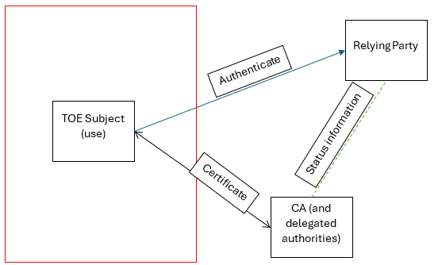

X.509 is an International Telecommunication Union Telecommunication Standardization Sector (ITU-T) standard for public key certificates. Public key certificates are used as authentication mechanisms for trusted communications protocols and as integrity verification methods.
This Functional Package (FP) for X.509 provides a collection of X.509 Security Functional Requirements (SFRs) and Evaluation Activities (EAs) for the verification and assertion identities of X.509 certificates, for the limited issuance of certificates used locally by TOE functions, and for the generation and provision of certificate status information of such TOE-issued certificates to the TOE functions that rely on such TOE-issued certificates. The intent of this FP is to provide Protection Profile (PP), collaborative Protection Profile (cPP), and Protection Profile Module (PP-Module) authors with a readily consumable collection of SFRs and EAs to be integrated into their documents.
1.2 Terms
The following sections list Common Criteria and technology terms used in this document.
1.2.1 Common Criteria Terms
Assurance
Grounds for confidence that a TOE meets the SFRs [CC].
Base Protection Profile (Base-PP)
Protection Profile used as a basis to build a PP-Configuration.
Collaborative Protection Profile (cPP)
A Protection Profile developed by international technical communities and approved by multiple schemes.
Common Criteria (CC)
Common Criteria for Information Technology Security Evaluation (International Standard ISO/IEC 15408).
Common Criteria Testing Laboratory
Within the context of the Common Criteria Evaluation and Validation Scheme (CCEVS), an IT security evaluation facility accredited by the National Voluntary Laboratory Accreditation Program (NVLAP) and approved by the NIAP Validation Body to conduct Common Criteria-based evaluations.
Common Evaluation Methodology (CEM)
Common Evaluation Methodology for Information Technology Security Evaluation.
Distributed TOE
A TOE composed of multiple components operating as a logical whole.
Functional Package (FP)
A document that collects SFRs for a particular protocol, technology, or functionality.
Operational Environment (OE)
Hardware and software that are outside the TOE boundary that support the TOE functionality and security policy.
Protection Profile (PP)
An implementation-independent set of security requirements for a category of products.
A comprehensive set of security requirements for a product type that consists of at least one Base-PP and at least one PP-Module.
Protection Profile Module (PP-Module)
An implementation-independent statement of security needs for a TOE type complementary to one or more Base-PPs.
Security Assurance Requirement (SAR)
A requirement to assure the security of the TOE.
Security Functional Requirement (SFR)
A requirement for security enforcement by the TOE.
Security Target (ST)
A set of implementation-dependent security requirements for a specific product.
Target of Evaluation (TOE)
The product under evaluation.
TOE Security Functionality (TSF)
The security functionality of the product under evaluation.
TOE Summary Specification (TSS)
A description of how a TOE satisfies the SFRs in an ST.
1.2.2 Technical Terms
Authority Key Identifier
A certificate extension that provides a means of identifying the public key corresponding to the private key used to sign a certificate or CRL.
Certificate Revocation List (CRL)
A method by which a CA has the ability to communicate that a certificate it issued has been revoked and should no longer be trusted, originally described in RFC 5280.
Certificate Signing Request (CSR)
A message that a subject sends to a certification authority to apply for a digital certificate.
Certification Authority (CA)
An entity that is responsible for the issuance and maintenance of digital certificates.
Distinguished Name (DN)
A unique identifier for a subject.
Enrollment over Secure Transport (EST)
A method of certificate management that uses HTTPS to transmit certificate requests and responses.
OCSP Multi-Stapling
An expedited version of OCSP where the CA includes an assertion of a leaf certificate's validity, as well as the validity of any intermediate CA certificates between the root and the leaf, as part of a connection handshake.
OCSP Stapling
An expedited version of OCSP where the CA includes an assertion of a leaf certificate's validity as part of a connection handshake.
Object Identifier (OID)
A numeric string that uniquely represents object types in certificates.
Online Certificate Status Protocol (OCSP)
A method by which a CA has the ability to communicate that a certificate it issued has been revoked and should no longer be trusted, originally described in RFC 6960.
Public Key Infrastructure (PKI)
The practice of associating subjects with public keys for the purpose of trusted communications, and the physical, logical, and personnel mechanisms used in support of implementing this.
Registration Authority (RA)
An optional component of public key infrastructure to which a CA can delegate certain management functions.
Subject Alternative Name (SAN)
A certificate extension that allows identities to be bound to the subject of a digital certificate.
Subject Key Identifier
A certificate extension that provides a means of identifying certificates that contain a particular public key.
basicConstraints
A Boolean flag that is used to designate whether a certificate is a CA certificate. If this flag is present and set to TRUE on a certificate, that certificate also has a pathLen attribute.
extendedKeyUsage (EKU)
An optional attribute of an X.509 certificate that designates the intended usage of the certificate, such as for server authentication, client authentication, or code signing.
pathLen
An attribute of CA certificates that specifies the maximum length of a certificate chain that terminates with that certificate.
1.3 Compliant Targets of Evaluation
The Target of Evaluation (TOE) in this functional package (FP) is a product that uses X.509 capabilities for certificates. A certificate user that depends on the public key of a certificate is required to process certificates using the ‘verify’ capabilities included in this FP. Such certificate users verify certificates for a variety of TOE functions, including subject authentication, trusted communications, validation of TOE software and firmware updates, or integrity verification as part of self testing. A certificate user that is represented as the subject of a certificate depends on the ‘assert’ capabilities included in this FP. TOE functions use certificates issued by a certification authority trusted by a relying party to convey a subject and context information associated with the certificate to the relying party. TOE functions that use certificates include external entity initiated communications with the TOE such as web services or email, and TOE-initiated communications with entities requiring client authentication. When all verifiers of a certificate are associated with TOE functions, it is permissible to use an embedded certification authority that is only trusted by the TOE (i.e., only locally trusted). When such functionality is provided, the TOE depends on the provider functionality of the FP. TOE functions that verify TOE provided certificates depend on the certificate status provider functionality in this FP; TOE functions that use TOE provided certificates depend on the certificate issuance functionality of this FP.
A conformant TOE will include the ability to validate X.509 certificates presented to it, including:
cryptographic validity of the digital signature.
time-based validity.
issuer-based validity.
revocation status using a Certificate Revocation List (CRL) or the Online Certificate Status Protocol (OCSP).
validation that the certificate's extensions are consistent with its intended use.
A conformant TOE must also define its intended uses for X.509 certificates and how to proceed when a certificate with undetermined revocation status is presented to it.
This FP also defines mechanisms by which the TSF can generate a Certificate Signing Request (CSR) for receiving a signed certificate from a Certification Authority (CA). This may be generated either as a file that is provided to a CA manually or done via an active network connection to the CA using Enrollment over Secure Transport (EST).
There may also be some situations where revocation checking is not performed. This FP defines an optional requirement for cases where exceptions to the claimed revocation functionality exist.
Lastly, the X.509 functionality defined by this FP is part of a TOE, but is not considered to be an entire TOE on its own. X.509 functionality is implemented by a wide variety of technology products, some of which are standalone and some dependent on a trusted platform (such as a software application on a general-purpose computer or mobile device). Auditable events have been defined for the SFRs in this FP for cases where the TOE boundary includes an audit function specified by FAU_GEN.1. A TOE that conforms to this FP may also implement or rely on its OE to implement appropriate management functionality for X.509 functionality that may include:
specifying root and intermediate CA certificates to be used as trust anchors.
generating certificate requests and loading signed certificates for the TOE's own use into its trust store.
specifying the revocation method that is used.
configuring how the TOE behaves in the event that certificate revocation information is unavailable.
Any conformant TOE must consider the extent to which X.509 functionality must be managed, and ensure that appropriate management claims are made in the TOE's ST or that the TOE conforms to a PP that allows a trusted platform in its OE to implement them.
This FP describes the extended security functionality of X.509 in terms of [CC].
The contents of this FP must be appropriately incorporated into a PP, cPP, or PP-Module. When this FP is incorporated as such, the ST must include selection-based requirements in accordance with the selections or assignments indicated in the incorporating document.
The PP, cPP, or PP-Module that instantiates this FP must typically include the following components in order to satisfy dependencies of this FP. It is the responsibility of the PP, cPP, or PP-Module author who incorporates this FP to ensure that dependence on these components is satisfied, either by the TOE or by assumptions about its OE.
An ST must identify in its conformance claims the applicable version of the PP, cPP, or PP-Module, and of this FP.
Table 1: Dependent Components Required for Package Functionality
Component
Explanation
FCS_CKM.1
To support public and private key pair generation for creating an X.509 CSR, the PP or PP-Module must include FCS_CKM.1 and specify the corresponding algorithms.
FCS_COP.1
To support the cryptography needed for X.509 validation, the PP or PP-Module must include FCS_COP.1 (iterating as needed) to specify appropriate digital signature validation and hash algorithms for the X.509 certificates presented to the TOE.
FCS_HTTPS_EXT.1
To support EST when claimed, or when CMC using HTTPS is claimed, the PP or PP-Module must include an SFR for HTTPS communications. Note that support for EST is not mandatory.
FCS_RBG.1
To support the Random Bit Generation (RBG) needed for public and private key pair generation, the PP or PP-Module must include FCS_RBG.1 or an extended SFR that defines comparable functionality.
FCS_TLSC_EXT.1
To support EST when claimed, the PP or PP-Module must include an SFR for TLS client communications. Note that support for EST is not mandatory.
FPT_KST_EXT.1
To support CA signing keys, whether the CA is using a certificate or the corresponding public key is loaded into the relying party’s trust store, the PP or PP-Module must include FPT_KST_EXT.1 to protect the private keys used.
FPT_KST_EXT.2
To support CA signing keys, whether the CA is using a certificate or the corresponding public key is loaded into the relying party’s trust store, the PP or PP-Module must include FPT_KST_EXT.2 to protect the private keys used.
FPT_STM.1
To support validating whether a presented X.509 certificate is expired, the PP or PP-Module must include FPT_STM.1 or some other requirement that ensures reliable system time.
FTP_ITC.1
To support EST when claimed, the PP or PP-Module must include FTP_ITC.1 to define a trusted channel between the TOE and a trusted CA. Note that support for EST is not mandatory.
1.4 Use Cases
The following use cases are distinct and may be combined for any given TOE. They include
the TOE as a relying party verifying the identity of entities using certificates obtained from an external CA
the TOE asserting an identity in a certificate provided by an external CA and providing identity verification (authentication) to external relying parties
the TOE acting as the sole relying party of entities issued certificates using an embedded CA
Combining the verify and subject use cases also includes authentication and verification between internal entities. Combining all three use cases allows external CAs to be used for both internal and external entities, but an internal embedded CA is only to be used for internal relying parties.
Note: A TOE that provides general Certification Authority functionality for external entities should be validated against the Certification Authority Protection Profile instead of this FP.
Note: TOEs that provide certification authority functionality as an embedded CA in support of TLS inspection should use the SSL/TLS Inspection Proxy (STIP) Protection Profile module instead of this FP. The ‘provide’ functionality in this FP is a generalization of the security requirements of the embedded CA functionality for STIP PP module, but this FP does not include the proxy and TLS processing requirements from the STIP PP module.
The following diagrams show each TOE use case (within the red box) with respect to its role in an overall system.
[USE CASE 2] TOE Asserting an Identity Using Certificates
 Figure 2: Use Case 2: TOE Asserting an Identity Using Certificates
[USE CASE 3] TOE as the Sole Relying Party of a Certificate Issued by an Embedded CA
Figure 3: Use Case 3: TOE as the Sole Relying Party of a Certificate Issued by an Embedded CA
2 Conformance Claims
Conformance Statement
An ST must claim exact conformance to this Functional Package.
The evaluation methods used for evaluating the TOE are a combination of the workunits defined in [CEM] as well as the Evaluation Activities for ensuring that individual SFRs and SARs have a sufficient level of supporting evidence in the Security Target and guidance documentation and have been sufficiently tested by the laboratory as part of completing ATE_IND.1. Any functional packages this PP claims similarly contain their own Evaluation Activities that are used in this same manner.
CC Conformance Claims
This Functional Package is conformant to Part 2 (extended) of Common Criteria CC:2022, Revision 1 as corrected and interpreted in [ERR], Version 1.1.
PP Claim
This Functional Package does not claim conformance to any Protection Profile.
There are no PPs or PP-Modules that are allowed in a PP-Configuration with this Functional Package.
Package Claim
This Functional Package is not conformant to any Functional or Assurance Packages.
3 Security Functional Requirements
This chapter describes the security requirements which have to be fulfilled by the product under evaluation. Those requirements comprise functional components from Part 2 of [CC]. The following conventions are used for the completion of operations:
Refinement operation (denoted by bold text or strikethrough text): Is used to add details to a requirement or to remove part of the requirement that is made irrelevant through the completion of another operation, and thus further restricts a requirement.
Selection (denoted by italicized text): Is used to select one or more options provided by the [CC] in stating a requirement.
Assignment operation (denoted by italicized text): Is used to assign a specific value to an unspecified parameter, such as the length of a password. Showing the value in square brackets indicates assignment.
Iteration operation: Is indicated by appending the SFR name with a slash and unique identifier suggesting the purpose of the operation, e.g. "/EXAMPLE1."
3.1 Auditable Events for Mandatory SFRs
The auditable events specified in this FP are included in an ST if the incorporating PP, cPP, or PP-Module supports audit event reporting through FAU_GEN.1, and if all other criteria in the incorporating PP or PP-Module are met.
Table 2: Auditable Events for Mandatory Requirements
The TSF shall [selection: verify, assert] identities included in X.509 certificates.
Application Note:
The ST author claims "verify" when the TOE associates identities included in X.509 certificates with users, external entities or inter-TOE entities authorized to exercise TOE functionality. The ST author claims "assert" when the TOE represents itself or its functions to internal or external entities.
The evaluator shall review the TSS and verify that the "verify" and "assert" claims are consistent with those selected in the SFR.
Guidance
There are no guidance EAs for this component.
Tests
There are no test EAs for this component.
Appendix A - Optional Requirements
As indicated in the introduction to this Functional Package, the baseline requirements (those that must be performed by the TOE) are contained in the body of this Functional Package. This appendix contains three other types of optional requirements:
The first type, defined in Appendix A.1 Strictly Optional Requirements, are strictly optional requirements. If the TOE meets any of these requirements the vendor is encouraged to claim the associated SFRs in the ST, but doing so is not required in order to conform to this Functional Package.
The second type, defined in Appendix A.2 Objective Requirements, are objective requirements. These describe security functionality that is not yet widely available in commercial technology. Objective requirements are not currently mandated by this Functional Package, but will be mandated in the future. Adoption by vendors is encouraged, but claiming these SFRs is not required in order to conform to this Functional Package.
The third type, defined in Appendix A.3 Implementation-dependent Requirements, are Implementation-dependent requirements. If the TOE implements the product features associated with the listed SFRs, either the SFRs must be claimed or the product features must be disabled in the evaluated configuration.
A.1 Strictly Optional Requirements
This Functional Package does not define any Strictly Optional requirements.
A.2 Objective Requirements
This Functional Package does not define any Objective requirements.
A.3 Implementation-dependent Requirements
This Functional Package does not define any Implementation-dependent requirements.
Appendix B - Selection-based Requirements
As indicated in the introduction to this Functional Package, the baseline requirements (those that must be performed by the TOE or its underlying platform) are contained in the body of this Functional Package. There are additional requirements based on selections in the body of the Functional Package: if certain selections are made, then additional requirements below must be included.
B.1 Auditable Events for Selection-based Requirements
The auditable events in the table below are included in a Security Target if both the associated requirement is included and the incorporating PP or PP-Module supports audit event reporting through FAU_GEN.1 and any other criteria in the incorporating PP or PP-Module are met.
Table 3: Auditable Events for Selection-based Requirements
The TSF shall implement a certificate profile function for certificates issued by a CA embedded within the TOE, supporting [assignment: list of TOE functions], using certificates in support of: [selection:
[selection:
[selection: TLS, DTLS] [selection: client authentication, server authentication]
IPsec and IKE peer authentication
SMIME subject authentication
[assignment: entity authentication for other authentication protocols]
] and shall ensure that issued certificates for use by the associated TOE functions are consistent with configured profiles.
Application Note: The ST author claims the TOE functions that will rely on the certificates issued by the embedded CA. A TOE may support different certificate profiles, each associated with unique embedded CA supporting a subset of the supported functions or the TOE may support a common profile that uses the key usage and extended key usage extensions to differentiate the intended use of a certificate. When a single CA supports multiple functions requiring explicit EKU values, the extendedKeyUsage extension is claimed in FDP_CER_EXT.1.2/OLTleaf to distinguish which functions are supported by the certificate.
The TSF shall generate certificates using certificate profiles that comply with requirements for issued certificates as specified in IETF RFC 5280, “Internet X.509 Public Key Infrastructure Certificate and Certificate Revocation List (CRL) Profile” as refined below, that apply to all supported functions described in FDP_CER_EXT.1.1/OLTleaf:
The version is 3 (value 02).
The certificate does not contain subjectUniqueID or issuerUniqueID fields.
The certificate serial number is unique with respect to each supported embedded CA.
The validity field shall specify a notBefore value that does not precede the current time and a notAfter value that does not precede the value specified in notBefore, and does not exceed the value specified in notBefore by [selection: a time length configured by an administrator, [assignment: positive length of time]]
The issuer field is populated with the name of the embedded CA issuing the certificate.
The signature field and the algorithm specification in the subjectPublicKeyInfo signature field agree and [selection: are in accordance with RFC 8603, use [assignment: list of supported functions]]
The following extensions are supported as described:
authorityKeyIdentifier [selection: containing the Subject Key Identifier in the issuing CA's certificate, [assignment: an identifier associated with a trust store element corresponding to the issuing CA]]
keyUsage is present with bit positions set for [selection:
digitalSignature (0)
contentCommitment (1)
keyEncipherment (2)
dataEncipherment (3)
keyAgreement (4)
encipherOnly (7)
decipherOnly (8)
] and no other usage indicators.
[selection:
subjectKeyIdentifier is populated
extendedKeyUsage is present and is populated with [selection:
basicConstraints is populated with [selection: no CA flag, CA flag equal to false]
cRLDistributionPoints indicating an access location for CRLs [selection: configured by an administrator, determined by the TSF]
authorityInfoAccess indicating an access location for [selection: CA certificates, OCSP responder] [selection: configured by an administrator, determined by the TSF]
[assignment: other extensions]
no other extensions
]
The authorityKeyIdentifier extension in any certificate issued by the TOE must be populated with [selection: the subjectKeyIdentifier extension contained in the TOE’s embedded CA’s signing certificate , an identifier indicating a trust store element associated with the embedded CA’s public key].
Application Note:
The ST author describes the certificates issued by an embedded CA and the methods for obtaining the data contained in the certificates. The supported fields and default values specified for all TOE functions are described in this element.
The ST author claims the methods for determining the maximum validity period in the selection for the validity field. Both options are claimed if the administrator can configure a time up to a TSF defined maximum.
The ST author describes the methods for determining the name of the embedded CA in the selection for issuer field.
The ST author claims the method for constraining the signature field and the algorithm specification in the subjectPublicKeyInfo field. The selection ‘…in accordance with RFC 8603’ is claimed if the TOE supports the algorithms indicated in the RFC for signing certificates, and also supports other algorithms not intended for signing certificates.
The ST author describes each extension supported and how values for the extension are determined. It is recommended that the extendedKeyUsage is claimed and populated with specific EKU purposes when the supported functions expect explicit EKU values; it is required that the extendedKeyUsage field is claimed when the embedded CA supports code signing or integrity functions. It is expected that if a single embedded CA issues certificates supporting multiple functions requiring explicit EKU values, the explicit EKU purposes for each function, including IPsec/IKE if supported, are claimed. Other supported EKU values specific to supported functions are indicated in the assignment. Any supported EKU values are consistent with the KU usage indicators claimed. For example, "codeSigning" is claimed only if "digitalSignature" is claimed for keyUsage, and TLS key usages "serverAuth" or "clientAuth" are claimed only when "digitalSignature," "keyEncipherment," or "keyAgreement" are supported according to the supported TLS function's version and ciphersuite capabilities.
If “subjectAlternateName” is claimed as a supported extension, the ST author claims all RFC 5280 name types supported and designates any other standard name types in the assignment, indicating the formatting and normalization standard used for each supported name type. Standards used to refine or provide alternate normalization for RFC 5280 name types are claimed via the assignment.
The TSF shall implement the following rules for populating certificate fields based on constraints imposed by the configuration of the embedded CA.
The validity field shall specify a notAfter time that does not exceed [selection: [assignment: a non-negative time period] prior to the notAfter time of the CA’s signing certificate, a time associated with the next scheduled update of the trust anchor associated with the CA’s public key, [assignment: a fixed time configured for the signature algorithm used]]
The issuer field is populated with the [selection:
subject of the CA’s signing certificate as configured by an administrator
an identifier for a trust store element associated with the embedded CA’s public key
]
[selection:
The subject name is limited based on name constraints [selection: indicated in the embedded CA’s certificate, specified in the context of the trust store element associated with the embedded CA’s public key]
The policyConstraints field is populated with [selection: a policy included in the embedded CA's certificate, an expectedPolicy included in the context of the trust store element associated with the embedded CA's public key]
Application Note: General profiles described in FDP_CER_EXT.1.2/OLTleaf are refined by specific configurations of the issuing CA in the SFR element. The ST author claims the source of these inputs
EST request in accordance with RFC 7030 as updated by RFC 8996
A CMC request meeting the profile specified in [selection: RFC 8756, [assignment: CMC profile supported]] in accordance with RFC 5272, RFC 5273, and RFC 5274 as updated by RFC 6402
A CMP request in accordance with RFC 4210 [selection: as updated by RFC 6712 and RFC 9481 (v2 CMP), as updated by RFC 6712 and RFC 9480 (v3 CMP)]
] validated by [selection: the supported function, [assignment: administrator action], [assignment: automated processes]]
The public key populated in the issued certificate is [selection:
generated by the TOE on [assignment: a specific event] and [selection: made available to the supported function via an inter-TOE channel, made available to an external entity via a protected channel, [assignment: associated with the supported function]]
provided [selection: in the request, by the supported function] together with [assignment: evidence of proof of possession by the requested subject]
]
[selection:
The [selection: notBefore, notAfter] portion of the validity field of the issued certificate is limited by [assignment: inputs from the supported function]
[assignment: other issuance conditions]
No other condition
]
Application Note:
A certificate profile is further refined by inputs of the function(s) supported.
In the first bullet, the ST author describes the name types indicated for each supported function (a subset of the supported name types indicated in FDP_CER_EXT.1.2/OLTleaf), how subjects of certificates are determined, and how the requested subject names are validated. Note that when multiple names are included in a request, 'validated' applies to all names populated in a certificate. When the subject of a certificate represents an entity external to the TOE or when an internal TOE entity supports it, a standard certificate request formatting or protocol is supported, and all certificate values requested by the entity are included in the request; the internal TOE function which exclusively trusts these external certificates may act as a registration authority as specified in the claimed RFC. When the subject of the certificate is associated with an internal TOE function, the values in the populated certificate may use any method that is under the control of the subject. PKCS-10 is claimed when the supported function interfaces directly with an embedded CA to generate a certificate representing a TOE entity. When the EST, CMC, or CMP method is claimed, the ST author will claim FDP_ESTS_EXT.1, FDP_CMCS_EXT.1, or FDP_CMPS_EXT.1, respectively.
In the second bullet, the ST author indicates where the key pair is generated and how the embedded CA validates that the entity represented in the certificate is in possession of the associated private key.
In the third bullet, the ST author describes the additional certificate constraints, if any, provided by the supported function that may override the values included in a certificate request (if supported).
The evaluator shall examine the TSS to ensure it describes the TOE functions using certificates generated by the embedded CA and how the certificate is used. For each such function, the evaluator shall verify the TSS describes one or more certificate profiles used by the embedded CA in support of the function that are compliant with the requirements.
The evaluator shall further examine the TSS to ensure that it describes how the TSF updates and enforces each certificate profile based on the configuration of the CA and inputs provided by the supported function.
For each subject DN or subjectAlternateName name type supported, the evaluator shall verify that the ST indicates the normalization standard used for the name type and the method used for ensuring the name populated in the certificate is appropriately normalized.
Guidance
The evaluator shall examine the AGD guidance and verify it describes instructions for configuring the embedded CA and its certificate profiles to meet the requirements.
For each supported function claimed in FDP_CER_EXT.1.1/OLTleaf, and for each certificate profile associated to the function, the evaluator shall cause the TOE to issue a certificate and observe that the certificate meets the appropriate profile, including constraints determined by the embedded CA configuration and inputs provided by the function. If multiple name types are supported, the evaluator shall repeat this test as necessary to include all supported name types.
Test FDP_CER_EXT.1/OLTleaf:2: [conditional] If “subjectName” is claimed and standard certificate requests are supported that allow a general DN to be input, the evaluator shall send the TSF a certificate request that includes a DN with an RDN component containing multiple elements and verify that TSF rejects the request.
Test FDP_CER_EXT.1/OLTleaf:3: [conditional] If “subjectAlternateName” is claimed, and standard certificate requests are supported that allow multiple SAN entries, then for each name type supported, the evaluator shall send the TSF a certificate request with multiple SAN entries of the indicated name type, where the first entry is valid and the second entry is invalid. The evaluator shall confirm that the TSF issues a certificate containing only the first entry. Note: the method to create an invalid entry depends on the validation methods claimed.
FDP_CER_EXT.2 Certificate Request Matching
The inclusion of this selection-based component depends upon selection in FIA_XCU_EXT.2.1.
The TSF shall [selection: invoke platform-provided functionality, provide functionality] to establish a linkage from certificate requests from a supported TOE function to issued certificates and [selection: issue an alert, provide a search capability] to allow administrators to associate certificates with the request.
This SFR is claimed when certificate requests to an embedded CA are supported. It ensures that administrators of the TSF are able to associate any issued certificate to a request from an authorized entity associated with a supported function, and identify certificates issued in response to requests from unauthorized entities, as the result of the misuse of access to the TOE.
If the association in FDP_CER_EXT.2 is performed as a condition of issuance, the ST author claims ‘not issue’; if the association is performed after issuance, the ST author claims ‘revoke’. Revoke should be claimed only if one or more of ‘generate certificate status information’ or ‘provide access to…’ is claimed in FDP_CSIR_EXT.1.1. The method of validating a request is specific to the request method. If ‘An EST request…’ is claimed, FIA_ESTS_EXT.1 is also claimed; If ‘A CMC request…’ is claimed, FIA_CMCS_EXT.1 is also claimed. If ‘A CMP request…’ is claimed, FIA_CMPS_EXT.1 is also claimed. It is preferred, but not required that the request identifiers, certificate identifiers and the binding is retained in searchable audit records for the embedded CA, but other mechanisms of establishing a binding are acceptable.
The evaluator shall inspect the TSS and verify that the method to associate certificates with requests by the supported function is described.
Guidance
The evaluator shall inspect AGD documentation to verify that instructions are included as necessary to ensure the binding of issued certificates to the request meets the requirements.
[conditional] If the embedded CA provides certificates to external entities in support of TOE functions, and if the binding is searchable, the evaluator shall cause a TOE function to initiate a certificate request for the external entity and observe that a binding associates the certificate with the function’s request.
FDP_CRL_EXT.1 Certificate Revocation List Generation
The inclusion of this selection-based component depends upon selection in FDP_CSI_EXT.1.1.
The TSF shall generate CRLs in accordance with ITU-T Recommendation X.509 refined by:
The [selection: issuer, issuerAltName] fields shall indicate the configured name of the CA.
The signature and signatureAlgorithm fields shall contain the OID for a digital signature algorithm in accordance with FCS_COP.1 in the base PP.
The thisUpdate field shall indicate the issue date of the CRL.
And [selection:
The nextUpdate field is populated with a value that does not precede the time specified in the thisUpdate field.
The version field is present with value 1.
The issuerAltName extension is marked critical.
]
.
Application Note:
This requirement should be claimed if 'ITU-T Recommendation X.509v2 CRL' is selected in FDP_CSI_EXT.1.1.
The ST author is expected to refine the FCS_COP.1 reference to include an iteration name that is appropriate for the digital signature requirement of the PP or PP-Module that conforms to this package. For example, a name like "FCS_COP.1/SigGen" is typical. It is expected that the supported signatures are limited to 3072-bit RSA or higher, or ECDSA using NIST P-384 or P-521, based on the signature requirements in the PPs and PP-Modules with which this FP is intended for use.
The ST author claims the optional refinements to ITU-T Recommendation X.509v2 CRL that are supported. If "issuerAltName" is claimed in the first refinement, then "The version field..." and "The issuerAltName..." entries in the optional refinements selection are claimed.
The evaluator shall examine the TSS to ensure it indicates whether the TOE supports CRL generation and, if so, describes the CRL generation function. In addition, the evaluator shall ensure that the TSS identifies which of the values identified in FDP_CRL_EXT.1.1 can be included in CRLs.
Guidance
If the TOE supports configuration of the CRL issuing function, the evaluator shall examine the operational guidance to ensure that instructions are available to configure issuance of CRL in accordance with FDP_CRL_EXT.1.1.
The TSF shall [selection: generate certificate status information, only issue certificates with a validity period of less than [assignment: time not to exceed 24 hours], provide access to [assignment: a certificate repository including status information] , depend on [assignment: method to invalidate trust in certificates revoked by the supported function]].
Application Note: Certificates issued by an embedded CA that is only trusted by supported TOE functions may be revoked via notification from a supported function, or via administrative actions. When revoked, certificate status information must become available to all internal TOE functions that may use the impacted certificate when the embedded CA is so notified. The TOE may use general methods such as issuance of CRLs or via an OCSP responder when one of the supported TOE functions expects such methods, or the TOE may provide direct access to a certificate repository managed by the embedded CA that includes status information. Distribution of Certificate status information is not required if certificates expire before notification is required, or if the issued certificates are only trusted by a single TOE function that manages the validity of certificates. If general methods are supported, the ‘generate certificate status information’ option is claimed and FDP_CSI_EXT.1 is claimed. If certificates are issued for a sufficiently small validity period, which is less than the time that is typically allowed to process revocation requests, revocation information is not required and the ST author assigns the maximum validity period allowed by the certificate profile, as indicated in FDP_CER_EXT.1/OLTleaf. If the TSF provides access to a certificate repository, the ST author claims ‘provide access …’ and identifies the repository and methods of access in the assignment. If each supported function manages the validity of the certificates it uses without depending on the embedded CA, the ST author claims ‘depend on…’ and describes the method used by each such function. In this case, the embedded function takes on traditional functionality of a CA. Depending on the PP or PP-Module that this FP is used with, certain requirements of that PP or PP-Module would then apply to the functionality described here as well, such as authorized administration to configure the function.
The evaluator shall review the TSS and verify that the description of the decision processes used by the TOE to invalidate certificates issued by the embedded CA is included and any threshold for issuing revocation information is described.
Guidance
The evaluator shall review AGD documentation to verify instructions to configure the ability of the embedded CA to issue certificate status information is described, if required.
If the TSS indicates that revocation status information is not provided for certificates having a validity period shorter than a threshold that is less than that indicated in the TSS for FDP_CER_EXT.1.4/OLTleaf, the evaluator shall ensure that the instructions describe how to configure the validity period so that issuance certificate status information is not required.
Tests
None.
FDP_CSI_EXT.1 Certificate Status Information Generation
The inclusion of this selection-based component depends upon selection in FDP_CSIR_EXT.1.1.
The TSF shall generate certificate status information whose format complies with [selection: ITU-T Recommendation X.509v2 CRL, ITU-T Recommendation X.509v2 CRL as refined by RFC 8603 , the OCSP standard as defined by RFC 6960].
Application Note: The ST author indicates the supported Certificate Status information methods. If "ITU-T Recommendation X.509v2 CRL" or "ITU-T Recommendation X.509v2 CRL as refined by RFC 8603" are claimed, FDP_CRL_EXT.1 is also claimed. If "the OCSP standard as defined by RFC 6960" is claimed, FDP_OCSP_EXT.1 is also claimed.
The TSF shall support changes to the status of a certificate by [selection: administrative action, [assignment: input from a supported function]].
Application Note: The ST author indicates the methods to notify the embedded CA of certificate status change. If inputs from a TOE function supported by the embedded CA trigger revocation, the ST author identifies the method of notification for each such function in the assignment.
The TSF shall provide certificate status information generated in accordance with FDP_CSI_EXT.1.1 via [selection:
posting CRLs at the location specified in the cRLDistributionPoints of the issued certificate
an OCSP mechanism indicated in the authorityInfoAccess extension of the issued certificate in accordance with FDP_OCSP_EXT.1
an OCSP response provided to [assignment: a TOE function using certificates issued by the embedded CA in support of TLS or DTLS server functionality] for OCSP stapling
The ST author claims the supported methods for distributing generated certificate status information to the supported functions that are relying parties for the issued certificates.
If ‘…OCSP stapling’ is claimed, the ST author identifies the functions using OCSP stapling for server-authenticated TLS or DTLS and describes the interface to provide the OCSP response to each of the functions in the assignment.
The evaluator shall examine the TSS and verify that the description of the revocation function meets the requirements of the referenced RFI, how revocation status updates are initiated, and how each supported function receives status updates.
Guidance
The evaluator shall examine the AGD documentation and verify that instructions for revoking certificates issued by the embedded CA are included, and that the configuration of revocation status information locations is described.
Tests
The evaluator shall perform the following test.
Test FDP_CSI_EXT.1:1: For each revocation method claimed, the evaluator shall attempt to cause the supported function to revoke an issued certificate. The evaluator shall demonstrate that the function no longer accepts the revoked certificate.
Test FDP_CSI_EXT.1:2: [conditional:] If status changes allow reinstatement of suspended certificates, then for each method supporting reinstatement, the evaluator shall suspend a certificate, demonstrate that it is not trusted, then reinstate the certificate and demonstrate that TSF allows subsequent use of the certificate. If the certificate is used for persistent signatures, then the evaluator shall also demonstrate that a signature applied by a suspended certificate prior to reinstatement is not trusted after the certificate is reinstated.
FDP_OCSP_EXT.1 OCSP Basic Response Generation
The inclusion of this selection-based component depends upon selection in FDP_CSI_EXT.1.1.
The evaluator shall examine the TSS and verify that the description of the OCSP response function is described and meets the requirements.
Guidance
The evaluator shall review the AGD documentation and verify that instructions for configuring the OCSP function, including specifying the location of the OCSP responder, if claimed, are described.
In conjunction with Test FDP_CSI_EXT.1:1, the evaluator shall observe that the OCSP response issued by the embedded CA is available at the configured locations and meet the criteria of this requirement.
Note: OCSP stapling includes the response signed by the OCSP responder in the TLS handshake data – this ‘location’ is used if OCSP stapling or OCSP multi-stapling is claimed, otherwise, the location is included in the issued certificate or at a configured local OCSP responder.
B.3 Identification and Authentication (FIA)
FIA_CMCC_EXT.1 CMC Client Certificate Enrollment
The inclusion of this selection-based component depends upon selection in FIA_X509_EXT.3.1.
The TSF shall [selection: invoke platform-provided functionality, provide functionality] to generate CMC [selection: simple requests, full requests] in accordance with RFC 5272 [selection: as updated by RFC 6402, as refined by RFC 8996] which meet the compliance requirements for a client and end-entity.
The TSF shall [selection: invoke platform-provided functionality, provide functionality] to [selection:
export CMC requests and import CMC responses under the control of an administrator,
require CMC transport over HTTPS in accordance with RFC 5273 [selection: as updated by RFC 6402, as refined by RFC 8996] with all renewal or re-key requests using mutual authentication
].
Application Note: The ST author claims the methods for exchanging CMC messages. If CMC transport over HTTPS is claimed, the HTTPS (with mutual authentication for renewal or re-key requests) is in accordance with FCS_HTTPS_EXT.1. If the certificate being renewed does not support TLS client authentication, the TSF uses a valid certificate suitable for TLS with client authentication having the same issuerName, subjectName, and subjectAltName as the certificate being renewed. If the TSF does not support such a certificate, this option is not claimed.
The evaluator shall examine the TSS to ensure that it describes how CMC client support is provided, the supported messages for each profile supported, and each optional feature from the RFI, and verify that the description complies with the requirements.
Guidance
The evaluator shall examine AGD guidance to ensure instructions are provided to configure CMC client functionality as necessary to meet requirements, or when multiple options are supported.
[conditional]: If HTTPS transport of CMC is supported, the evaluator will observe that CMC messages are transported over a compliant HTTPS session with the CA. If renewal or re-key is supported, the evaluator shall attempt to renew or re-key a certificate obtained in Test FIA_CMCC_EXT.1:1, and verify that compliant mutually authenticated HTTPS is established with the CA.
FIA_CMCS_EXT.1 Certificate Management over CMS (CMC) Server
The inclusion of this selection-based component depends upon selection in FDP_CER_EXT.2.2.
The TSF shall be able to accept and process CMC [selection: full requests, simple requests] meeting the profile specified in [selection: RFC 8756, [assignment: CMC profile supported]] in accordance with RFC 5272, RFC 5273, and RFC 5274, as updated by RFC 6402.
Application Note: The ST author claims supported CMC request processing and the supported CMC profiles as indicated in FDP_CER_EXT.1.4/OLTleaf, with matching selections. A CMC profile describes the cryptographic functions and extensions supported. If profiles other than RFC 8756 are supported, the ST author describes the supported cryptographic functions and extensions used for those profiles. Cryptographic functions used in the CMC profile are limited to those specified in the PP or PP-Module which claims conformance to this FP. The mechanism that implements these functions (e.g., whether it is part of the TSF or invoked from its platform) is specified in FIA_CMCS_EXT.1.4.
The TSF shall be able to generate CMC simple responses and [selection: CMC full responses, no other] consistent with the CMC profile which are in accordance with RFC 5272 as updated by RFC 6402, meeting the compliance requirements for CMS server and certification authorities in accordance with RFC 5274 as updated by RFC 6402.
Application Note: The ST author claims the supported CMC responses meeting each CMC profile claimed in FIA_CMCS_EXT.1.1. RFC 6402 section 4.1 indicates mandatory support for cryptographic functions that are no longer recommended. This PP functional package does not allow such deprecated functions, and instead requires that supported cryptographic functions be specified in a CMC profile.
The TSF shall [selection: invoke platform-provided functionality to require, require] [selection: [assignment: transfer of CMC files to entities as authorized by the supported functions], CMC transport over HTTPS for CMC messages from [assignment: external entities as authorized by the supported function]] in accordance with RFC 5273 as updated by RFC 6402. For CMC requests containing certificate requests other than initial certificate requests authenticated using shared secrets, the TSF shall require HTTPS with client authentication, shall ensure the authenticating entity is the same as the entity signing the CMC request and any subject indicated in the requested certificates are the same as the authenticating entity, or the authenticating entity is [selection: an authorized RA for the requested subject, no other entity].
Application Note:
The ST author claims the supported transport of CMC requests from a supported function and responses to the supported function making the request. If CMC file transport is used, the ST author claims the first option and describes the method for transferring the files to and from each entity as authorized by the supported function in the assignment. If the TSF supports CMC transport to external entities via HTTPS, the second option is claimed, and the ST indicates which entities are authorized to request certificates.
Cryptographic support is specified in the CMC profile.
The TSF shall require the use of [selection: platform-provided, TSF] cryptographic functionality for supported CMC messages using the following functions: [assignment: list of cryptographic functions].
Application Note: The ST author specifies the cryptographic functions used for CMC and whether these functions are part of the TSF or invoked by it as part of the TOE platform (e.g., a cryptographic library offered by a general-purpose operating system for third-party applications). It is expected that the cryptographic implementation cited here is consistent with any claims made in the PP or PP-Module which claims conformance to this FP, both with regards to where the implementation resides and for what algorithms are used.
The TSF shall accept, process and send CMC messages as authorized by [selection: an RA entity associated with the supported function, [assignment: an interface to the supported function], under the control of an administrator [assignment: limited to support of the associated TOE function]] and shall reject unauthorized requests.
Application Note: The ST author indicates how CMC requests are authorized to meet the needs of supported functions. A supported function requiring certificates to be generated by the embedded CA and using CMC to manage those certificates may approve certificates using an entity possessing an RA certificate, via an interface or via manual configuration. If ‘an RA entity…’ is claimed, additional selections are also claimed to account for the initial RA certificate used by the entity. The second option is claimed if certificates are authorized by an interface to the supported function. This option is claimed if a supported certificate management method other than CMC is used to establish initial certificates, or if the supported function informs the CMC function via an implied or explicit interface. For example, an interface can be implied through the use of HTTPS transport controlled by the TOE function. Administrator control of CMC requests is acceptable, and may be required if an RA certificate associated with the function is initialized using manually imported CMC or if the function associates certificates with local users (e.g., administrator SSH certificates), but is limited to certificate requests required by the supported function. If ‘under the control of an administrator’ is claimed, the ST author describes how administrators are limited to certificate requests associated with supported function.
The evaluator shall examine the TSS to ensure that it describes how CMC server support is provided for each supported TOE function managing certificates from the embedded CA using CMC. The evaluator shall examine the TSS to ensure it describes how initial and subsequent certificates requests are authenticated and authorized for use by the supported function.
Guidance
The evaluator shall examine the operational guidance to ensure it contains instructions on how to configure CMC processing to support the TOE’s certificate profile(s) associated to supported functions using CMC. If the TSS indicates that neither AuthenticatedData or Identity Proof Version 2 Control mechanisms using shared secrets are supported, the evaluator shall also examine the operational guidance to ensure that it describes how to authenticate requests for initial subscriber certificates and, if supported, initial certificates for Registration Authority functions, when no other certificates are available.
Tests
For each supported TOE function using CMC for managing certificates from the embedded CA, the evaluator shall perform the following tests.
[conditional]: If the supported function uses an administratively installed RA entity to approve certificates in CMC requests, the evaluator shall follow AGD guidance as necessary to initialize and install an RA certificate associated with the supported function. The evaluator shall observe that the initial RA certificate request is authenticated using CMC proof-of-possession, matches the relevant CMCRA certificate profile, and is authorized using a method described in FIA_CMCS_EXT.1.5.
For each authorization method applicable to initial certificate requests used by the supported function, the evaluator shall cause an initial certificate request to be presented to the TSF that is approved using the method. The evaluator shall confirm that the authorization method is used.
The evaluator shall cause a valid initial certificate request for an authorized external entity to be sent over HTTPS and observe that the TSF sends the response over the established channel.
[conditional]: If the TSF supports certificate renewal or update of external entities via CMC, the evaluator shall cause the certificate in the response to test 3 to authenticate the HTTPS session for a CMC requests for a certificate renewal using a CMC request and observe that the response includes the requested certificate.
The evaluator then shall cause a certificate update request to be transported over HTTPS for which the certificate message from the requester is empty. The evaluator shall observe that the TSF does not provide the requested certificate in a CMC response.
FIA_CMPC_EXT.1 CMP Certificate Enrollment
The inclusion of this selection-based component depends upon selection in FDP_CER_EXT.2.2.
The TSF shall [selection: invoke platform-provided functionality, provide functionality] to generate CMP requests [selection: in accordance with RFC 4210 as updated by RFC 6712 and RFC 9481 (CMP version 2), in accordance with RFC 4210 as updated by RFC 6712 and RFC 9480 (CMP version 3)], which meet the compliance requirements for subject and end entities.
The TSF shall [selection: invoke platform-provided functionality, provide functionality] to [selection:
export CMP requests and import CMP responses under the control of [selection: an administrator, [assignment: supported function capabilities]]
transport CMP messages over HTTPS in accordance with RFC 6712, with all renewal or re-key requests using mutual authentication
transport CMP messages over HTTPS in accordance with RFC 9480 (CMP version 3) with all renewal or re-key requests using mutual authentication
].
Application Note:
The ST author claims the methods for exchanging CMP messages.
If CMP request and response files are transported, the ST author claims the first option and indicates how the files are transferred to the CMP server.
If the TSF includes an embedded CA that accepts CMP requests under the control or authorization of a supported function, the ST author describes the transport mechanism and any authorization decisions in the assignment.
If CMP transport over HTTPS is claimed, the HTTPS (with mutual authentication for renewal or re-key requests) is in accordance with FCS_HTTPS_EXT.1.
When HTTPS is claimed, the certificate used to authenticate the session meets the requirements in this FP for a TLS client certificate and has the same subjectName and subjectAlternateName as the certificate being renewed; if the TSF does not possess such a certificate, this option is not claimed.
The evaluator shall examine the TSS to ensure that it describes how CMP client support is provided and complies with the requirements.
Guidance
The evaluator shall examine AGD guidance to ensure instructions are provided to configure CMP client functionality as necessary to meet requirements, or when multiple options are supported.
[conditional]: if HTTPS transport of CMP is supported, the evaluator shall observe that CMP messages are transported over a compliant HTTPS session with the CA. If renewal or re-key is supported, the evaluator shall attempt to renew or re-key a certificate obtained in Test FIA_CMPC_EXT.1:1, and verify that compliant mutually authenticated HTTPS is established with the CA.
FIA_CMPS_EXT.1 Certificate Management Protocol (CMP) Server
The inclusion of this selection-based component depends upon selection in FDP_CER_EXT.2.2.
The TSF shall use the Certificate Management Protocol (CMP) as specified in [selection: RFC 4210 as updated by RFC 6712 and RFC 9481 (v2 CMP), RFC 4210 as updated by RFC 6712 and RFC 9480 (v3 CMP)] to receive, process, and respond to CMP requests received from authorized clients and [selection: [assignment: entities authorized as registration authorities], no other entity].
Application Note: This SFR is claimed if the embedded CA supports CMP server functionality, as indicated in FDP_CER_EXT.1.4/OLTleaf, and the claimed versions match the selections. If Registration Authority is supported, the ST author describes entities that are issued RA roles. Authorized entities may be an administrative user, or a functional entity associated with a supported TOE function. If v3 CMC is also supported, certificates associated with such authorized entities have an extendedKeyUsage field that includes the id-kp-cmcRA purpose. Entities with an RA role are used to authenticate initial requests on behalf of authorized clients that might not have existing certificates issued by the embedded CA.
The TSF shall [selection: invoke platform-provided functionality, provide functionality] to authenticate CMP subjects and end-entities for re-enrollment via certificate-based authentication and [selection: RA assertion, no other method].
Application Note: Certificate-based authentication refers to signatures used in CMP messages from clients or end entities who possess a certificate used for transferring messages directly from the client or end entity. The ST author claims authentication methods used for initial requests and any alternate authentication methods for CMP messages. If RA entities are claimed in FIA_CMPS_EXT.1.1, the ST author claims ‘RA assertion’ if RA authentication is used to authorize subject or end entity requests.
The TSF shall [selection: invoke platform-provided functionality, provide functionality] to authenticate CMP subjects and end-entities for initial enrollment via the CMP basic authenticated scheme using [selection: RA attestation, [assignment: out of band shared secret]] as configured by an administrator, [assignment: other method of establishing initial authentication material].
Application Note: The ST author indicates the methods for establishing initial authentication material for each supported function. If out-of-band methods are used to distribute shared secret information to authenticate initial request, the ST author describes the method, including the requirements for authorized users and any TOE-negotiated out-of-band channel used in the assignment. The ST author claims ‘as configured…’ if the initial authentication of clients or end entities is determined by configuration of the TOE. The ST author describes any other method for initializing subjects if applicable.
The TSF shall verify proof-of-possession of the private key associated with a public key included in an issued certificate using [selection: in-line messaging, RA assertion, CA key generation].
Application Note: The ST author claims ‘in-line messaging’ if certificates are provided to external entities. The ST author claims ‘in-line messaging’ or ‘CA key generation’ according to the method supported for certificates assigned to internal TOE entities.
The evaluator shall examine the TSS and verifies the description of CMP server functionality is described and is compliant with the requirements.
Guidance
The evaluator shall examine AGD documentation and verifies that any configurable features of the CMP server functionality required to meet the requirements are included.
For each initial authentication method supported, the evaluator shall demonstrate that the TSF is able to authenticate clients using the indicated authentication material. The evaluator shall then attempt to provide invalid authentication material for the method and demonstrate that the TSF does not generate the requested certificate.
For each supported authentication method using certificate-based authentication, the evaluator shall demonstrate that the TSF is able to process a request using the method. The evaluator shall then use certificates not trusted by the TSF for CMP message authentication, and observe the TSF does not generate the requested certificate.
For each supported proof-of-possession method supported, the evaluator shall demonstrate that the TSF is able to process the certificate requests for certificates using the method. The evaluator shall then present invalid proof-of-possession evidence for the certificate request and observe that the TSF does not generate the requested certificate.
The TSF shall [selection: invoke platform-provided functionality, provide functionality] to generate [selection: simple, full CMC] requests using Enrollment over Secure Transport (EST) in accordance with RFC 7030 with an EST server associated to a certification authority.
The TSF shall [selection: invoke platform-provided functionality, provide functionality] to obtain EST server and CA certificates for authorized EST services via [selection: implicit TA database configured by an administrator, an explicit TA database populated via a TLS-authenticated ESTCA certificate request in accordance with RFC 7030 section 4.1.2 and FCS_TLSC_EXT.2].
The TSF shall [selection: invoke platform-provided functionality, provide functionality] to authenticate EST servers using X.509 certificates that chain to trust store elements from the [selection: implicit TA database, explicit TA database] in accordance with FIA_X509_EXT.1 for all EST requests.
The TSF shall [selection: invoke platform-provided functionality, provide functionality] to authenticate its certificate enrollment request to receive [assignment: list of certificates] from an authorized EST server using [selection:
HTTP basic authentication transported over TLS (HTTPS) in accordance with RFC 7030 section 3.2.3
HTTP digest authentication using a cryptographic hash algorithm transported over TLS (HTTPS) in accordance with RFC 7030 section 3.2.3
Certificate-based authentication in accordance with RFC 7030 section 3.3.2 using [assignment: pre-existing certificate authorized by the EST server]
The TSF shall [selection: invoke platform-provided functionality, provide functionality] to generate authenticated re-enrollment requests in accordance with RFC 7030 Section 3.3.2, using an existing valid certificate with the same subject name as the requested certificate and which was issued by the CA associated with the EST server.
The TSF shall [selection: invoke platform-provided functionality, provide functionality] to update its EST-specific Trust Anchor Database using the “Root CA Key Update” process described in RFC 7030, Section 4.1.3.
Application Note: The ST author claims the supported EST capabilities.
The evaluator shall examine the ST and verify that EST functionality is described and meets the requirements.
Guidance
The evaluator shall examine the AGD guidance and verify that instructions for configuring EST functionality are described, including initializing the implicit TA database if claimed.
The TSF shall use the Enrollment over Secure Transport (EST) protocol as specified in RFC 7030, as updated by RFC 8996, to receive, process, and respond to certificate simple enrollment requests from authorized clients and [selection: [assignment: entities authorized as registration authorities], no other entity].
Application Note: This SFR is claimed if the TOE supports an EST server associated with an embedded CA to process enrollment requests; the embedded CA is referred to as the ESTCA in the RFC. Updates to RFC 7030 indicated in RFC 8996 applies to all references to RFC 7030 in this SFR. If Registration Authority (RA) functionality is supported, the ST author describes which authorized entities the ESTCA issues RA certificates to. Authorized entities may be an administrative user, or a functional entity associated with a supported TOE function. Certificates associated with such authorized entities have an extendedKeyUsage field that includes the id-kp-cmcRA purpose and are used to make authenticated initial requests on behalf of authorized clients that might not have existing certificates issued by the ESTCA.
The TSF shall [selection: invoke platform-provided functionality, provide functionality] to authenticate EST clients for re-enrollment via TLS certificate-based mutual authentication in accordance with RFC 7030 Section 3.3.2.
Application Note: Enrollment over Secure Transport (EST) uses the simple Certificate Request Message as specified in RFC 7030. Requirements associated with mutual authenticated TLS as a server are included in the base PP.
The TSF shall [selection: invoke platform-provided functionality, provide functionality] to authenticate EST clients for initial enrollment and for supplemental authentication via [selection:
HTTP basic authentication in accordance with RFC 7030 section 3.2.3
HTTP digest authentication using a cryptographic hash algorithm in accordance with RFC 7030 section 3.2.3
TLS certificate-based mutual authentication using a client certificate associated with an authorized RA in accordance with RFC 7030 section 3.3.2
].
Application Note: HTTP authentication methods are claimed if the method is supported for initial enrollment, when the client does not possess an existing certificate for authentication, or if HTTP authentication are supported as a supplemental authentication method. If HTTP digest authentication is claimed, the associated hash function is required to be claimed in the base cryptographic support functions. Either of the HTTP authentication methods are included in an HTTPS secure connection with an EST client. Requirements associated with server-authenticated HTTPS are included in the base PP. If RA functionality is supported, as indicated in FIA_ESTS_EXT.1.1 the ‘TLS certificate-based…’ method is claimed for authorized RA entity identified in FIA_ESTS_EXT.1.1. If claimed, requirements associated with mutually authenticated TLS as a server are included in the base.
The TSF shall authorize EST clients based on [selection: the authenticated client certificate is issued by the ESTCA and asserts id-kp-cmcRA in its extended key usage extension as specified by RFC 7030 Section 3.7, [assignment: policy used by the TOE to determine client authorization in accordance with RFC 7030 section 3.7]]
Application Note: The ST author specifies claims supported client authorization methods. The first option is claimed when RA functionality is assigned to authorized entities in accordance with FIA_ESTS_EXT.1.1. If HTTP authentication methods are claimed in FIA_ESTS_EXT.1.3, the ST author claims the second option and describes how the TOE determines a client is authorized.
The evaluator shall examine the TSS to ensure it describes the implementation of this protocol. If the description indicates the use of an RA for initial issuance or authorization of certificates, the evaluator shall examine the TSS to ensure that this role is supported and associated with the specified entities.
Guidance
The evaluator shall examine the operational guidance to ensure it contains instructions on configuring the TOE so that EST conforms to the description in the TSS.
The evaluator shall use an EST client to request certificate enrollment of an authorized subject to obtain a new certificate from the TOE using the simple enrollment method described in RFC 7030 Section 4.2, authenticating the request using an existing certificate and corresponding private key as described by RFC 7030 Section 3.3.2.
The evaluator shall confirm that the TOE issues a certificate and returns it to the client.
[conditional]:If HTTP basic authentication or if HTTP digest authentication is selected in FIA_ESTS_EXT.1.3, the evaluator shall use an EST client to request an initial certificate for an authorized entity from the TOE using the simple enrollment method described in RFC 7030 Section 4.2, authenticating the request using a username and password established for the entity in each of the claimed methods, as described by RFC 7030 Section 3.2.3.
The evaluator shall confirm that the TOE issues a certificate and returns it to the client.
[conditional]: If “the authenticated client certificate is issued by the ESTCA and asserts id-kp-cmcRA in its extended key usage extension…” is selected in FIA_ESTS_EXT.1.4, the evaluator shall use an EST client to request certificate enrollment of a subject not known to the TOE to be authorized, to request an initial certificate from the TOE using the simple enrollment method described in RFC 7030 Section 4.2, authenticating the request using an RA’s certificate issued by the TOE’s embedded CA, that asserts id-kp-cmcRA in its extended key usage extension. The evaluator shall confirm that the TOE issues a certificate and returns it to the client.
[conditional]: If “the authenticated client certificate is issued by the ESTCA and asserts id-kp-cmcRA in its extended key usage extension…” is selected in FIA_ESTS_EXT.1.4, the evaluator shall use an EST client to request certificate enrollment of a subject not known to the TOE to be authorized, to request an initial certificate from the TOE using the simple enrollment method described in RFC 7030 Section 4.2, authenticating the request using a certificate issued by the TOE’s Certification Authority functionality that does not assert id-kp-cmcRA in its extended key usage extension and which is not associated with RA privileges. The evaluator shall confirm that the TOE does not issue a certificate.
The evaluator shall modify the EST client or set up a man-in-the-middle tool between the EST client and TOE to perform the following modification to a valid certificate request.
Modify at least one byte in the certificationRequestInfo field of the certificate request message and verify that the TOE rejects the request.
FIA_TSM_EXT.1 Trust Store Management
The inclusion of this selection-based component depends upon selection in FIA_X509_EXT.1.6.
The TSF shall [selection: invoke platform-provided functionality, implement functionality] to manage [assignment: designated trust store or individual trust store elements] by [selection:
Using an update function
Use of [assignment: inputs provided by the supported function]
Allowing the administrator to manage the trusted [selection: self-signed root CA certificate, local OCSP certificate, 'no-check' OCSP certificate, public key] of a trust store’s elements
Allowing the administrator to manage context rules of a trust store
Validating the certification path of any certificate that is neither a self-signed root CA certificate nor an OCSP certificate, [selection: when installed by an administrator as a trust store element, on use] and [selection: on demand, during [assignment: defined events], periodically every [assignment: time], no other time ]
Prohibit inclusion of certificates that are neither a self-signed root CA nor an OCSP certificate as trust store elements.
]
Application Note:
This element focuses on the management of trust stores used for certificate path processing. Trust stores consist of the context rules and one or more self-signed root CA certificates containing a trusted public key or ‘raw’ trusted public keys. Trust store elements are single trusted public keys using the context of the trust store for certificate path validation. OCSP certificates trusted by the TOE may also be considered trust store elements, and must be included in a trust store when revocation information is not provided directly by the issuing CA. Revocation status of local (associated with a locally configured OCSP responder) or ‘no-check’ (contains the extension id-pkix-ocsp-nocheck) OCSP certificates are not verified in accordance with the options in RFC 6960 section 4.2.2.2.1.
The ST author designates which trust stores or trust store elements are managed in the assignment (a subset of those indicated in FIA_X509_EXT.1.6) and specifies one or more options for the management of trust stores used for validating certificates in the second selection.
The ‘Using an update function’ option is claimed if the TOE includes trust store updates as part of the TOE's update function.
The ‘Use of inputs provided by the supported function’ option is claimed if reference identifiers or other specific context information provided by the function initialize certificate path processing rules.
The ‘Allowing the administrator to manage the trusted…’ option is claimed if the TOE supports administrator management of the public key associated to a trust store. The ST author specifies which trusted public keys are loaded. Local or 'no-check' OCSP certificates are claimed if OCSP certificates are loaded.
The ‘Allowing the administrator to manage context rules of a trust store‘ option is claimed if the TOE supports administrator management of the context rules associated with a trust store.
The ‘Methods in accordance with RFC 5934’ option is claimed if the Trust Anchor Management Protocol is supported.
The ST author indicates support for validating intermediate CA, OCSP certificates with revocation information provided by the issuing CA, or leaf certificates as trust store elements in the second selection and specifies when full validation of the certificate path for these certificates is performed.
The first option ‘Validating…’ is claimed if trust stores may include certificates other than root and OCSP (local or ‘no-check') certificates. For example, such trust store elements may include intermediate certificates to enhance performance or to refine the context for certification paths including these CA certificates. It is also common to designate leaf certificates associated with privileged users as trust store elements. If this option is claimed, the ST author also indicates when the revocation checks are performed. The first option ‘when installed…’ is claimed if either of the ‘Allowing the administrator to manage…’ selections are claimed. The ‘on-use’ option is claimed if such certificates are included in a trust store via other options (if ‘Using an update function’ or ‘Using … RFC 5934’ is claimed). The ‘on use’ option may also be claimed for installed certificates. In addition, the ST author indicates other times (if any) that the revocation status of such certificates is checked.
The second option, ‘Prohibit…’ is claimed otherwise – that is, if the managed trust stores do not contain certificates whose revocation status can change after the trust store is initialized.
The evaluator shall review the TSS and verify that the description of each trust store includes a description of the management methods that meet the requirements, to include management methods of both pre-loaded and installed trust store elements if the methods differ. The evaluator shall also ensure the ST states the method used to invalidate a trust store element.
[conditional]: If the TSF supports inclusion of certificates that are neither self-signed root CA certificates nor OCSP certificates without revocation status, the evaluator shall review the TSS and verify that the description indicates when such certificates are checked for revocation status and that the description meets the requirements.
Guidance
The evaluator shall review the operational guidance to verify that instructions for all configurable features, if any, of the TSF are included.
The evaluator shall examine the operational guidance to verify it contains instructions on how to use each supported method to invalidate a trust store element.
[conditional] If administrative management of trust stores (public keys or context) is supported, the evaluator shall review the operational guidance and verify that instructions for managing all trust store elements in all administrator-managed trust stores is included.
Tests
The evaluator shall perform one or more of the following tests:
For each supported method for managing a trust store element, the evaluator shall exercise the method to invalidate a trust store element and demonstrate that a certification path terminating in the invalidated element results in the function failing.
Note: This repeats part of Test FIA_X509_EXT.1:1. It is not necessary to repeat the method used to invalidate the trust anchor element that was previously tested.
[conditional]: If the TSF supports installation of certificates that are neither self-signed root CA certificates nor OCSP certificates without revocation status, the evaluator shall demonstrate that the TSF prevents the installation of each such supported certificate type if the certificate is revoked prior to installation.
Note: Such certificate types can include leaf certificates associated with context specific to the leaf, or intermediate CA certificates. Checking during installation is not claimed for certificates in which the required connection is not available during loading, or if other exemptions for revocation checking apply; such certificates are checked on use.
Test FIA_TSM_EXT.1:3: [conditional]: If the TSF supports the inclusion of certificates that are neither self-signed root CA certificates nor OCSP certificates without revocation status and claims revocation status checks other than “when installed…” the evaluator shall demonstrate for each such certificate type, and for each event that checks revocation status, that a certificate of the indicated type that is revoked prior to the indicated event is not considered valid.
FIA_X509_EXT.1 X.509 Certificate Validation
The inclusion of this selection-based component depends upon selection in FIA_XCU_EXT.1.1.
The TSF shall [selection: invoke platform-provided functionality, implement functionality] to validate certificates in accordance with the following rules:
Certification path validation meets requirements of RFC 5280 for certificate paths of [selection: unlimited path length, maximum path length of [assignment: number greater than or equal to 0] certificates] and certificate paths exceeding the maximum path length are invalid.
The current time is within the notBefore and notAfter values of all certificates in the certification path.
The certification path shall terminate at a trust anchor element appropriate for the supported function.
Certificates containing subjectUniqueID or issuerUniqueID fields are considered invalid.
Certificates are signed using cryptographic signatures and hashes in accordance with RFC 8603, and [selection:
[assignment: list of supported cryptographic algorithms]
no other algorithms
] and certificates signed using other cryptographic algorithms are considered invalid.
[selection:
CRLs are signed using cryptographic signatures and hashes in accordance with RFC 8603 and [selection:
[assignment: list of supported cryptographic algorithms]
no other algorithms
] and CRLs signed using other cryptographic algorithms are considered invalid;
sha384WithRSAEncryption with key size of 3072 bits or greater,
ecdsa-with-SHA384 using [selection: secp384r1, secp521r1],
ecdsa-with-SHA512 using [selection: secp384r1, secp521r1],
] and [selection:
[assignment: list of other supported algorithms]
no other algorithms
] requested using the preferredSignatureAlgorithm extension and OCSP responses are considered invalid if using other algorithms;
no other algorithm constraints
]
Application Note:
ST authors may claim the assignment of a positive integer indicating a limited capability of the TSF to handle long certificate paths in the certification path validation selection; to indicate certificate paths exceeding its capabilities are considered invalid. The option “unlimited path length” is claimed if there are no such limitations.
Trust anchors can be root CA certificates or public keys, together with context rules determining the appropriate use of a certificate path beyond those required in RFC 5280. Context rules may include initial name constraints, policy constraints, required certificate key usage and extended key usage values, and lists of applications associated with the trust anchor, among other rules that restrict the use of certificate paths terminating at the root CA certificate or public key. A specific formatting of trust anchors is not required, but see RFC 5914 for further discussion.
This SFR element refines RFC 5280. All requirements indicated with a “MUST” in RFC 5280 are implied. In addition, this element requires support for the authorityKeyIdentifier, subjectKeyIdentifier, and keyUsage extensions even though RFC 5280 describes them as optional. The selections in this SFR may imply that additional optional requirements from RFC 5280 are required. For example, basicConstraints, including both the CA and CA values, is required when the TSF supports path lengths greater than 2; cRLDistributionPoints is required if CRLs are supported; and AIA is required if OCSP is supported. Other selections may imply additional extensions must be processed. A restriction on uniqueSubjectID and uniqueIssuerID also refines RFC 5280, which only requires the extensions be ignored.
For the selection on certificate signing rules, the ST author claims one of the certificate signature algorithm limitations. The second option is claimed if any of the signature and hash algorithms described in the FCS_COP family of SFRs from the base PP are supported. For these signature limitations, use of P-521 or SHA-512 is indicated by including the supported algorithms in the assignment, even though its use is not explicitly indicated in RFC 8603.
ST authors similarly claim signature algorithm limitations in the final selection for each supported revocation status (CRL or OCSP) method claimed in FIA_X509_EXT.1.3. If CRL or OCSP methods are not claimed in FIA_X509_EXT.1.3, ‘no other signature algorithm constraints’ is claimed.
The TSF shall [selection: invoke platform-provided functionality, implement] processing of the extensions indicated in RFC 5280, section 4.2,
Authority Key Identifier,
Subject Key Identifier
keyUsage
and [selection:
basicConstraints
authorityInformationAccess
cRLDistributionPoints
certificatePolicies
policyMapping
Subject alternate name containing any of the following name types [selection:
rfc822Name
dNSName
directoryName
uniformResourceIdentifier
IPAddress
[assignment: other name types]
]
extendedKeyUsage
nameConstraints
[assignment: other extensions]
no other extensions
].
Application Note: This SFR refines RFC 5280 to require applications to process the authorityKeyIdentifier and subjectKeyIdentifier fields and use them to support certificate chaining within the certificate path. The ST author claims all supported certificate extensions. If other extensions are supported, the ST author describes the extension, values, and any processing to determine whether paths with certificates asserting those extensions are valid. If a certificate has an empty subject name, the subject alternate name will be present and marked critical. If the TSF supports certificates with empty subject fields, the subjectAltName extension and a non-empty list of supported name types is claimed. The extendedKeyUsage is expected for many functions. It is claimed if required by the supported functions. In accordance with RFC 5280, any certificate containing non-supported extensions marked as critical are considered invalid, but otherwise non-supported extensions that are not marked as critical are ignored.
The TSF shall [selection: invoke platform-provided functionality, implement functionality] to validate revocation status of the certificate using [selection:
The Online Certificate Status Protocol (OCSP) as specified in RFC 6960
Certificate Revocation Lists (CRL) as specified in RFC 5280 and refined by RFC 8603
Certificate Revocation Lists as specified in RFC 5280
Based on validity period: Certificates expiring within [assignment: time less than 24 hours] of the current time are considered valid when no other valid revocation status information is available
Administrative notification of revocation: [assignment: administrative action upon notification] using [assignment: method to invalidate use of certificates in supported functions] when the certificate is revoked.
Direct association with Certification Authority: [assignment: direct revocation status information implementations]
].
Application Note:
The ST author claims the type of revocation status information supported. It is preferred that OCSP and CRL are supported when certificate validation supports multiple functions as indicated in FIA_X509_EXT.2. However, some functions require alternative approaches to revocation status validation and CAs supporting these functions may not provide OCSP or CRL sources. Certificates supporting these functions use alternative revocation status validation methods.
The option ‘Based on validity period…’ is claimed if certificates supporting a function are only valid for less than 24 hours and issued under a certificate policy that allows 24 hours or longer to process revocation requests. The time allowance in this option is specified in the assignment; if this is configurable, the assignment indicates so and specifies the limits of the assignment.
The option ‘Administrative notification…’ is claimed if the certificates are used by a function for which out-of-band notification of compromise is practiced and is expected to be claimed when certificates that do not include revocation status information sources are processed. Typically used for OCSP certificates without revocation status source information, certificates which validate software or firmware components or maintain data integrity when the TOE is in a state prohibiting revocation status retrieval or processing. This option assumes public notification or direct notification to administrators by the issuer of the certificate, or for embedded certification authority functionality under the control of the administrator. The assignments in this option are used to describe required administrative actions and methods used to invalidate the function using such certificates.
The option ‘Direct association with Certification Authority…’ is claimed if the certificates are used for TOE-specific functions and where TOE has direct and reliable communication path with the issuing CA. The CA in this case could be an embedded CA, or a CA dedicated to the TSF. If claimed, the ST author identifies the issuing CA and the method of automated notification in the assignment.
Certificates that do not have revocation status location indicated in either the CRL DP or AIA are not expected to use CRL or OCSP for revocation status validation. In this case, one of the last three selections is claimed and the basis for invalidating certificates is explained in the assignment. In many of these cases, revocation status for the issuing CA certificates is depended on to indicate the status of leaf certificates, so it is preferred that CRL or OCSP is claimed even if leaf certificates exclusively use alternative methods. It is acceptable to include such intermediate certificates in trust stores to avoid the requirement to check revocation status when connections to obtain certificate status information are not available.
not obtain revocation status information by the TSF due to [selection: determining that the certificate expires within [assignment: time less than 24 hours], determining that the [assignment: supported function] validates revocation status using [assignment: methods supported by the function]]
invoke platform-provided functionality
implement functionality
] to obtain supported revocation status information via [selection:
Network connection to [selection: CA, CRL distribution point, OCSP responder, [assignment: alternate sources ]]
Local revocation status information from [selection: cached CRL, embedded CA repository, local OCSP responder, administrator configuration]
An OCSPTLS Status Request Extension (OCSP stapling) as specified in RFC 6066,
An OCSPTLS Multiple Certificate Status Request Extension (OCSP multi-stapling) as specified in RFC 6961
]
Application Note:
The ST author claims the supported options the TSF uses to ensure that supported functions obtain revocation status information. These options must be consistent with the rules for revocation status checking claimed in FIA_X509_EXT.1.1. It is preferred, but not required, that multiple methods are claimed to ensure valid revocation is available when a supported function requires it. If the option to not obtain revocation status information due to the TSF determining that supported functions perform revocation checking is claimed, the ST author specifies the specific functions from FIA_X509_EXT.2 that perform revocation status checking and the methods used by the function, including the relevant SFR references). It is required that at least one option is supported for each supported function indicated in FIA_X509_EXT.2.
'Network connection...' is claimed if the TOE supports retrieving revocation status information from external sources, to include direct information from a CA, even when the information might not be in the form of a CRL or OCSP. The selection indicates the types of sources for which external revocation status is supported. This method must be claimed if certificates are obtained from external CAs.
'Local revocation status information...' is only claimed if the TOE maintains revocation status information available to all supported functions using the certificates. The type of status information maintained locally is claimed in the selection for this option. If ‘embedded CA repository’ is claimed, FDP_CER_EXT.1/OLTleaf and FDP_CSIR_EXT.1 are also claimed. When a default status value is configured for when all other sources are not available, the ST author claims local revocation status information and administrator configuration.
OCSP stapling or OCSP multi-stapling are claimed for TLS server certificates supporting the appropriate extensions when OCSP is supported, as described in the referenced RFC and may be claimed if FIA_X509_EXT.2 indicates support TLS or DTLS.
The TSF shall [selection: invoke platform-provided functionality, implement functionality, pass context information to the supported function] to validate that the context of the certificate path and trust store element is consistent with the supported function use via [selection:
processing [selection:
[assignment: trust store context rules]
extendedKeyUsage field constraints in the leaf certificate including: [selection:
[assignment: trust store context rules],
extendedKeyUsage (EKU) field constraints in the leaf certificate including: [selection:
Certificates used for trusted updates and executable code integrity verification shall have the Code Signing Purpose (id-kp 3 with OID 1.3.6.1.5.5.7.3.3),
Client certificates presented for TLS shall have the Client Authentication purpose (id-kp 2 with OID 1.3.6.1.5.5.7.3.2),
Server certificates presented for TLS shall have the Server Authentication purpose (id-kp 1 with OID 1.3.6.1.5.5.7.3.1),
Delegated OCSP signer’s certificates presented for OCSP responses shall have the OCSP Signing purpose (id-kp 9 with OID 1.3.6.1.5.5.7.3.9),
Server certificates presented for EST shall have the CMC Registration Authority (RA) purpose (id-kp-cmcRA with OID 1.3.6.1.5.5.7.3.28),
Certificates representing a Registration Authority have the CMC Registration Authority Purpose (id-kp-cmcRA with OID 1.3.6.1.5.5.7.3.28),
Certificates representing a Registration Authority have the v3 CMP Registration Authority Purpose (id-kp-cmcRA with OID 1.3.6.1.5.5.7.3.28)
SMIME certificates presented to protect email have the email protection purpose (id-kp-emailProtection with OID 1.3.6.1.5.5.7.3.4),
IPsec and IKE certificates used in conjunction with other functions requiring an explicit EKU also have the IPsec-IKE purpose (id-kp-ipsecIKE with OID 1.3.6.1.5.5.7.3.17) in accordance with RFC 4945, section 5.1.3.12,
[assignment: other EKU values required by supported functions]
]
] and rejects the certificate if the context requirements are not met,
]
passing [selection: certification path, [assignment: context from certification path processing] passed to the supported function]
].
Application Note:
The ST author claims whether the TSF processes trust store rules or passes context to the supported function. If the TSF processes trust store context rules, the ST author describes the application context for each supported trust store, if any. Such rules include the interpretation of extensions in a root CA certificate used as a trust store element, the interpretation of required extensions in intermediate CA certificates, and required extensions in the leaf certificate, with interpretations (referenced RFC and/or refined use) on how such extensions and their values limit the applicability of a certification path, any initial name constraints (including reference IDs processed as part of path validation), expected certificate policies, etc.
The ST author claims "extendedKeyUsage field..." if context depends on the value of the EKU in leaf certificates. This selection is required if the TSF supports the listed functions (Code integrity, OCSP, TLS, DTLS, SMIME), as claimed in FIA_X509_EXT.2.1 or as required in other SFRs in this package. For example, RA purpose is required if FDP_CER_EXT.1/OLTleaf is claimed and a supported certificate request protocol (EST, CMC, or v3 CMP) uses the RAEKU purpose to determine RA privileges associated with a supported function. It is preferred, but not required that each function using certificates indicated in FIA_X509_EXT.2.1 include context information that distinguishes certificates intended for use by the function. While RFC 5280 generally allows the use of ‘anyPurpose’ it indicates that applications may require explicit values. This element clarifies the requirement that certificates without an EKU field or with the ‘anyPurpose’ OID in lieu of the required explicit value are considered invalid if used for applications for which an explicit EKU value is required.
The ST author claims ‘pass context information to the supported function’ and the final option in the last selection to describe certification path context information passed to the supported function. Context information can be the entire certification path used, or specific context (name constraints, policy constraints etc.) made available to the function for its own suitability decision. Any context information derived from certification path processing by the TSF that is passed to the supported function, to include the certification path processing and the resulting context, is described in the assignment. The option to pass information is not to be claimed in lieu of processing the required extendedKeyUsage fields for supported functions unless the ST of the function supported includes the required context processing.
The TSF shall [selection: manage trust stores, use platform-managed trust stores] used for certification path validation.
Application Note: The ST author claims ‘manage trust stores’ if the TSF provides a management capability for trust stores that terminate the certification paths used by TOE functions, regardless of whether or not the TSF uses platform functionality to perform the management. FIA_TSM_EXT.1 is included in this case. If all management of trust stores is performed by the platform, the ST author claims ‘use platform-managed trust stores.’
The evaluator shall review the TSS and verify that the description of certificate path validation and context verification meets the requirements.
The evaluator shall review the TSS and verify that all trust stores used for certification path verification are described, to include context associated with the trust store, and any pre-loaded trust store elements, and that the management capabilities associated with each trust store is described.
Guidance
The evaluator shall ensure that instructions for any configurable features of the validation process are included. If the ST includes provisions for exception processing of certificate revocation status information, the evaluator shall ensure the operational guidance contains instructions on how the indicated options are configured. If the TOE supports any extension that requires configuration to validate, the evaluator shall verify that the operational guidance includes instructions for configuring the processing of that extension.
Tests
The evaluator shall perform the following tests. The tests for the extendedKeyUsage rules, name constraints and policy constraints, if supported, are performed in conjunction with the uses that require those rules.
Test FIA_X509_EXT.1:1: The evaluator shall demonstrate that validating a certificate without a valid certification path results in the function failing by performing the following:
[conditional] If the TSF imposes limits on certification path lengths, the evaluator shall demonstrate that the TSF rejects valid certificates whose certification path exceeds the supported length.
[conditional] If the TSF supports a path length greater than one when the trust store element is a root CA certificate, or greater than two when the trust store element is a raw public key, then the evaluator shall perform the following:
The evaluator shall establish a certification path in which one of the issuing certificates is not a CA certificate by omitting the basicConstraints field in one of the issuing certificates and demonstrate that the TSF rejects the certificate.
The evaluator shall set the basicConstraints field in an issuing certificate to have CA=False and demonstrate that the TSF rejects the certificate.
The evaluator shall omit the CA signing bit of the key usage field in an issuing certificate and demonstrate that the TSF rejects the certificate.
The evaluator shall set the path length field of a valid CA field to a value strictly less than the certification path and demonstrate that the TSF rejects the certificate.
The evaluator shall establish a valid certification path consisting of a leaf certificate and one or more valid CA certificates up to the limit of the certification path length supported (if finite), and terminating in a trust store element, and demonstrate that the TSF accepts the certification path as valid. The evaluator shall then modify a byte in the public key of an intermediate certificate in the certificate path that is not a trust store element and demonstrate that the TSF rejects the leaf certificate and its modified certification path.
The evaluator shall establish a certification path terminating at an untrusted public key, but which is otherwise valid, and demonstrate that the TSF rejects the certificate.
The evaluator then reinstate trust in the trust store element, but modify a byte in the public key of an intermediate certificate in the certificate path that is not a trust store element and show that the function fails.
[conditional]: If the TSF does not support unlimited path length, the evaluator shall demonstrate that validating a valid certificate path of greater length than the TSF supports results in the function failing.
The evaluator shall demonstrate that a valid certificate path using cryptographic algorithms not allowed for certification path signature functions results in the function failing.
Note: If the TSF supports signature and hash algorithms for TOE functions, but disallows their use in certification path validation, the evaluator uses one of these signatures or hashes in the construction of the valid certificate path (e.g., SHA-1 might be so restricted). If there are no such signature or hash functions, the evaluator uses an unsupported signature or hash function (e.g., DSA and MD-5 are not supported).
The evaluator shall demonstrate that validating a certificate after its validity period's "notAfter" time results in the function failing. The evaluator shall demonstrate that validating a certificate prior to its validity period's "notBefore" time results in the function failing.
[conditional]: If the TSF supports certificate policies, the evaluator configures the TSF to require a specific policy OID, and demonstrates that a valid certificate path asserting the policy OID results in the function succeeding, and a valid certification path not asserting that policy (or a policy that maps to it) results in the function failing.
Note: The policy OID used in the test need not be associated with specific practices of any CA - only the processing and matching of the OIDs is required.
[conditional]: If the TSF supports certificate policies and policy mapping, the evaluator configures the TSF to require a specific policy OID that is mapped to an expected policy. The evaluator demonstrates that a valid certification path that asserts the policy OID and includes the mapping to the expected policy results in the function succeeding, and that a certification path that asserts the policy OID, but not the proper mapping results in the function failing.
Note: The policy OID used in the test need not be associated with specific practices of any CA - only the processing and matching of the OIDs is required.
[conditional]: If the TSF supports other extensions, for each supported extension, the evaluator establishes a certification path which asserts the extension and value expected by the function, and demonstrates that the function succeeds. The evaluator then establishes, in turn as applicable, a certification path without the extension, and a certification path with the extension but with an invalid value, and demonstrates that the function requiring such extension and values fails.
The evaluator shall test that the TOE can properly handle supported methods for revoked certificates. The evaluator demonstrates that when all supported methods indicate that each certificate in the certification path is valid, the function succeeds. Then, for each supported method, the evaluator demonstrates that when the method indicates a certificate in the certification path is revoked, the function fails. The evaluator shall repeat this test on intermediate, non-trust store elements.
[conditional]: If the TSF supports OCSP or CRL, the evaluator shall demonstrate that the TSF does not consider invalid revocation information in determining the status of a certification path. The evaluator shall test for invalid signature, and unauthorized signer of the status information for each of the supported OCSP or CRL methods, where the invalid status information indicates valid and other status information indicates invalid; and where the invalid status information indicates invalid and other status information indicates valid. Other status information can be the most recent cached information, or that from another supported method – when both OCSP and CRL are supported one can provide invalid status information and the other provide valid status information.
Note: an invalid signature can be obtained by modifying a byte of a valid signature; unauthorized signers use valid signatures by an entity not authorized (not delegated by the issuing CA, and if local OCSP responders are supported, not locally trusted) to sign revocation status information.
[conditional]: If the TSF supports validity status determination based on expiration within a short time and at least one other method, the evaluator will demonstrate that expiration time is not considered when another method is available and provides valid status information – the evaluator demonstrates that certification path including a soon-to-expire certificate that has been revoked results in the function failing.
[conditional]: If the TSF supports multiple revocation status information sources, then for each supported source of revocation status information, the evaluator demonstrates certificate status information resilience by making all but the one source of supported revocation status information unavailable to the TSF. The evaluator demonstrates that the TSF is able to use the available status information.
[conditional: If a function in FIA_X509_EXT.2 requires TSF processing of context information for path validation] For each supported function requiring TSF processing context information, and for each supported certificate context and usage constraint claimed, the evaluator shall demonstrate that a certification path that does not meet the context constraints required by the function causes the function to fail.
Note: This test is not performed if ‘pass context information to the supported function’ is the only method of certification path context processing claimed.
Test FIA_X509_EXT.1:14: The evaluator shall establish a certificate with an empty subject field and not containing a subjectAlternateName extension, but which is otherwise valid and trusted by the TSF. The evaluator shall demonstrate that the TSF rejects the certificate.
Test FIA_X509_EXT.1:15: [conditional]: If certificates with non-empty subject fields are validated and if either name constraints processing is supported or one or more reference ID checking rules are included in trust store context rules, then for each RDN supported, the evaluator shall configure the TOE to enforce a rule on the RDN value, establish a value for the RDN that matches the rule, and perform the following steps:
The evaluator shall present a valid certificate containing a valid DN with the matching RDN value to the supported function and verify that the certificate is accepted.
The evaluator shall then present a second certificate where the RDN component does not match the rule, but which is otherwise valid and matches the first certificate. The evaluator shall observe that the certificate is rejected.
The evaluator shall present a third certificate, where the DN includes the RDN with a non-matching value as in the second certificate, but which also includes a non-supported (or undefined) RDN term populated with the matching value for the original RDN, and which is otherwise valid and matches the first certificate and demonstrate that the modified certificate is rejected.
The evaluator shall present a fourth certificate, where the DN does not include the RDN, but which includes an unsupported (or undefined) RDN with the matching value for the original RDN as in the third certificate, but which is otherwise valid and demonstrate that the modified certificate is rejected.
The evaluator shall present a fifth certificate where the DN includes the RDN with a value containing the matching value as a substring of a longer, non-matching value, but which is otherwise valid and demonstrate that the modified certificate is rejected.
The evaluator shall present a sixth certificate where the DN includes the RDN as a multi-element RDN, where both elements contain matching values, but which is otherwise valid and observe that the certificate is rejected.
Test FIA_X509_EXT.1:16: [conditional]: If the subject_Alt_Name extension is supported and if the TSF either supports name constraints or reference ID matching as part of trust store context rules, then for each name type supported, the evaluator shall configure the TSF to enforce a rule to constrain the values of the name type, and generate a matching value that meets the constraints, as well as a non-matching value that does not meet the constraints. The evaluator shall then perform the following:
The evaluator shall establish a valid certificate that includes the SAN name of the given type and matching value. The evaluator shall present the certificate to a supported function and demonstrate that the certificate is accepted.
The evaluator shall establish a second certificate that includes the SAN name of the given type and non-matching value. The evaluator shall present the certificate to a supported function and demonstrate that the certificate is rejected.
[conditional]: If the TSF also supports a CN in the subject field, the evaluator shall configure the TSF as necessary to prefer SAN entries over the CN and establish a valid certificate which contains both a subject field including the non-matching value as a CN entry, and the matching value as the SAN entry. The evaluator shall present the certificate to the supported function and demonstrate that the certificate is accepted. The evaluator shall then establish a certificate with the matching name in the CN, and the non-matching name in the SAN entry, but which is otherwise valid. The evaluator shall present the certificate to a supported function and demonstrate that the certificate is rejected.
FIA_X509_EXT.2 X.509 Certificate Support for Functions
The TSF shall [selection: invoke platform-provided functionality to validate, validate] X.509v3 certificates in accordance with FIA_X509_EXT.1 to support [assignment: supported functions] using [selection:
[selection: TLS, DTLS, IPsec or IKE , SMIME, SSH, [assignment: other authenticated communications protocol]]
[selection: code signing for system software updates, code signing for software integrity testing, integrity verification for TSF protected data, administrator authentication, user authentication , [assignment: other uses]]
]
Application Note: The ST author lists all supported functions that depend on identities associated with certificates in the assignment. For each such function, the ST author claims the protocols and services used by the supported functions that require certificates.
For each function indicated in FIA_X509_EXT.2.1, the TSF shall [selection: invoke the TOE platform to determine, determine] whether the [selection: administrator is allowed to configure certificate acceptance, supported function determines acceptance via [assignment: method of determining acceptance], certificate is accepted, certificate is not accepted] when valid certificate revocation status information cannot be obtained from a source indicated in FIA_X509_EXT.1.3.
Application Note:
When multiple methods of revocation status information are available, it is expected that the aggregate reliability of supported methods will limit the use of exception processing. However, it is required that the TOE have a specified behavior in case all status information options are either invalid or not available. This behavior may be specific to certain trust stores or supported functions. It is strongly encouraged that ‘certificate is accepted’ not be claimed for client authentication and more generally when reliable revocation status checks are available. For supported functions where external certificate revocation status information is not expected to be available such as firmware updates or initial network connections for the TSF that cannot establish a network connection, best practice is to use certificates that do not advertise CRL or OCSP locations, and instead support alternate revocation status verification methods. The option ‘supported function determines acceptance...’ is claimed when the supported function determines revocation status exceptions, for example, by presenting an option to the authorized user of the function, or when the function validates the status of intermediate CA or leaf certificates included in a trust store at times other than when used. In such cases, the ST author describes the methods used in the assignment.
The treatment of invalid revocation status information should not impact the validity of a certificate if other revocation status information is available. It is expected that processing invalid revocation status information is logged.
The evaluator shall review the TSS to validate that all functions using certificates are described and that function-specific exception processing rules for handling unavailable valid certificate status information is included.
Guidance
[conditional]: If “administrator is allowed to configure certificate acceptance” is claimed, the evaluator shall inspect the guidance documentation to ensure instructions for configuring application-specific behavior for certificate validation is included.
[conditional]: If application-specific default responses for inaccessible certificate status information are supported, then for each function supporting such defaults, the evaluator shall configure a default behavior as necessary for each such response, clear or disable all sources of revocation information available to the function, and establish a certification path that requires an external source for certificate status information. The evaluator shall demonstrate that the TSF exhibits the default behavior when presented with the certification path.
Note: This test is only required if the default mechanism is not included as a local revocation status information method in FIA_X509_EXT.1.3
FIA_X509_EXT.3 X.509 Certificate Requests
The inclusion of this selection-based component depends upon selection in FIA_XCU_EXT.2.1.
[assignment: list of other certificate field and extension values]
[assignment: list of identifying information]
no other information.
]
Application Note: The supported certificate request mechanisms are claimed in the first selection. PKCS-10 is claimed whether a manual request process is used or if the PKCS-10 request is posted to the certification authority (for embedded CAs or as in ACME implementations). Other options embed the certificate request in a formalized certificate management protocol. If EST is claimed, FIA_ESTC_EXT.1 is also claimed; if CMC or CNSA CMC are claimed, FIA_CMCC_EXT.1 is also claimed; if v2 or v3 CMP is claimed, FIA_CMPC_EXT.1 is also claimed.
The TSF shall [selection: invoke platform-provided functionality, provide functionality] to validate the certificate path in accordance with FIA_X509_EXT.1 upon receiving the CA Certificate Response, and validate that the certificate path of the response is consistent with the intended usage.
Application Note: The certificate path returned should include the CA from which the certificate was requested as the issuing CA and may include intermediate CAs, terminating at a trust store element. The context of the certificate path includes context specified by the trust store and refined by name constraint extensions, policy-related extensions, and other extensions present in the intermediate CA certificates, as well as the extensions in the requested certificate. Since the extensions in the Intermediate CA certificates are not specified in the request, the TSF should perform checks to ensure they do not modify or prohibit the intended use. Also, some extensions present in the requested certificate may be populated by the issuing CA that were different than those requested (due to error, or by policy). The TSF can identify those differences automatically, or present any questionable values for review by an authorized user before installing the certificate.
The evaluator shall review the TSS to confirm that it describes the options to obtain certificates representing a TOE function.
Note: All certificates obtained from external CAs or from an embedded CA that supports formal requests are included. It is not necessary that certificates obtained from an embedded CA that are only locally trusted by the TOE to represent TOE functionality within the TOE are requested using standard techniques.
Guidance
The evaluator shall examine the operational guidance documentation and confirm that it contains instructions for obtaining a certificate for TOE functions using the supported options, for configuring the subject name type included in a request, for configuring the name representing the TOE function and any other extensions to be included in the certificate.
The evaluator shall inspect the AGD documentation to ensure instructions for configuring application-specific behavior for certificate validation is included.
Tests
Test FIA_X509_EXT.3:1: For each certificate required to represent a TOE function, for each name type supported, and for each request option supported for that function, the evaluator shall configure the TOE function name of the selected type and any extensions required by the function and request a certificate using the request method. The evaluator shall observe that the certificate received by the TOE is validated and represents the TOE function.
FIA_XCU_EXT.2 X.509 Certificate Acquisition
The inclusion of this selection-based component depends upon selection in FIA_XCU_EXT.1.1.
] to represent [assignment: TOE functions ] for [selection:
[selection: TLS, DTLS, IPsec or IKE, SMIME, SSH, [assignment: other authenticated communications protocol] ]
[selection: code signing for system software updates, code signing for software integrity testing, integrity verification for TSF protected data, administrator authentication, user authentication, [assignment: other uses]]
].
Application Note:
The ST author claims the method for obtaining certificates and the source of certificates, and describes the functions represented and how the functions use certificates. The ST author claims ‘request certificates…’ if certificates are requested using standard request formats or protocols, and FIA_X509_EXT.3 is also claimed. If ‘embedded CA’ is claimed in the sub-selection, then FDP_CER_EXT.1/OLTleaf and FDP_CER_EXT.2 are also claimed. If ‘obtain certificates from an embedded certification authority’ is claimed, FDP_CER_EXT.1/OLTleaf is claimed.
The use of embedded CAs is constrained to only locally trusted functions. That is, the relying party for a certificate issued by the embedded CA is limited to TOE functions. In practice, this limitation typically precludes privileged users from using certificates issued by an embedded CA, especially in environments where administrative access to systems (including both TOE functions and non-TOE functions) is governed by an identity management policy. So, while not mandatory, it is strongly recommended that ‘external’ CA is claimed, and that all functions that provide person-entity authentication to privileged TOE functions support certificate requests to an external CA.
The evaluator shall review the ST and confirm that the methods for obtaining certificates for representing its supported functions are described.
Guidance
There are no guidance EAs for this component.
Tests
There are no test EAs for this component.
Appendix C - Extended Component Definitions
This appendix contains the definitions for all extended requirements specified in the Functional Package.
C.1 Extended Components Table
All extended components specified in the Functional Package are listed in this table:
Table 4: Extended Component Definitions
Functional Class
Functional Components
Identification and Authentication (FIA)
FIA_CMCC_EXT CMC Client Certificate Enrollment FIA_CMCS_EXT Certificate Management over CMS (CMC) Server FIA_CMPC_EXT CMP Certificate Enrollment FIA_CMPS_EXT Certificate Management Protocol (CMP) Server FIA_ESTC_EXT EST Certificate Enrollment FIA_ESTS_EXT Enrollment over Secure Transport (EST) Server FIA_TSM_EXT Trust Store Management FIA_X509_EXT X.509 Certificate Handling FIA_XCU_EXT Certificate Usage
User Data Protection (FDP)
FDP_CER_EXT Certificate Generation and Issuance FDP_CRL_EXT Certificate Revocation List Generation FDP_CSIR_EXT Certificate Status Information Required FDP_CSI_EXT Certificate Status Information Generation FDP_OCSP_EXT OCSP Basic Response Generation
C.2 Extended Component Definitions
C.2.1 Identification and Authentication (FIA)
This Functional Package defines the following extended components as part of the FIA class originally defined by CC Part 2:
Components in this family define requirements for the TOE to generate CMC requests.
Component Leveling
FIA_CMCC_EXT.1, CMC Client Certificate Enrollment, requires the TSF to generate, export, import, and transport CMC requests that meet client and end-entity compliance requirements.
Management: FIA_CMCC_EXT.1
No specific management functions are identified.
Audit: FIA_CMCC_EXT.1
The following actions should be auditable if FAU_GEN Security audit data generation is included in the PP/ST:
The TSF shall [selection: invoke platform-provided functionality, provide functionality] to generate CMC [selection: simple requests, full requests] in accordance with RFC 5272 [selection: as updated by RFC 6402, as refined by RFC 8996] which meet the compliance requirements for a client and end-entity.
FIA_CMCC_EXT.1.2
The TSF shall [selection: invoke platform-provided functionality, provide functionality] to [selection:
export CMC requests and import CMC responses under the control of an administrator,
require CMC transport over HTTPS in accordance with RFC 5273 [selection: as updated by RFC 6402, as refined by RFC 8996] with all renewal or re-key requests using mutual authentication
].
C.2.1.2 FIA_CMCS_EXT Certificate Management over CMS (CMC) Server
Family Behavior
Components in this family define requirements for the TOE to accept CMC requests.
Component Leveling
FIA_CMCS_EXT.1, Certificate Management over CMS (CMC) Server, requires the TSF to accept, process, and send CMC requests that meet CMS server and CA requirements.
Management: FIA_CMCS_EXT.1
No specific management functions are identified.
Audit: FIA_CMCS_EXT.1
The following actions should be auditable if FAU_GEN Security audit data generation is included in the PP/ST:
CMC messages received containing certificate or revocation requests
The TSF shall be able to accept and process CMC [selection: full requests, simple requests] meeting the profile specified in [selection: RFC 8756, [assignment: CMC profile supported]] in accordance with RFC 5272, RFC 5273, and RFC 5274, as updated by RFC 6402.
FIA_CMCS_EXT.1.2
The TSF shall be able to generate CMC simple responses and [selection: CMC full responses, no other] consistent with the CMC profile which are in accordance with RFC 5272 as updated by RFC 6402, meeting the compliance requirements for CMS server and certification authorities in accordance with RFC 5274 as updated by RFC 6402.
FIA_CMCS_EXT.1.3
The TSF shall [selection: invoke platform-provided functionality to require, require] [selection: [assignment: transfer of CMC files to entities as authorized by the supported functions], CMC transport over HTTPS for CMC messages from [assignment: external entities as authorized by the supported function]] in accordance with RFC 5273 as updated by RFC 6402. For CMC requests containing certificate requests other than initial certificate requests authenticated using shared secrets, the TSF shall require HTTPS with client authentication, shall ensure the authenticating entity is the same as the entity signing the CMC request and any subject indicated in the requested certificates are the same as the authenticating entity, or the authenticating entity is [selection: an authorized RA for the requested subject, no other entity].
FIA_CMCS_EXT.1.4
The TSF shall require the use of [selection: platform-provided, TSF] cryptographic functionality for supported CMC messages using the following functions: [assignment: list of cryptographic functions].
FIA_CMCS_EXT.1.5
The TSF shall accept, process and send CMC messages as authorized by [selection: an RA entity associated with the supported function, [assignment: an interface to the supported function], under the control of an administrator [assignment: limited to support of the associated TOE function]] and shall reject unauthorized requests.
C.2.1.3 FIA_CMPC_EXT CMP Certificate Enrollment
Family Behavior
Components in this family define requirements for the TOE to generate CMP requests.
Component Leveling
FIA_CMPC_EXT.1, CMP Certificate Enrollment, requires the TSF to generate, export, import, and transport CMP requests that meet subject and end-entity compliance requirements.
Management: FIA_CMPC_EXT.1
No specific management functions are identified.
Audit: FIA_CMPC_EXT.1
The following actions should be auditable if FAU_GEN Security audit data generation is included in the PP/ST:
The TSF shall [selection: invoke platform-provided functionality, provide functionality] to generate CMP requests [selection: in accordance with RFC 4210 as updated by RFC 6712 and RFC 9481 (CMP version 2), in accordance with RFC 4210 as updated by RFC 6712 and RFC 9480 (CMP version 3)], which meet the compliance requirements for subject and end entities.
FIA_CMPC_EXT.1.2
The TSF shall [selection: invoke platform-provided functionality, provide functionality] to [selection:
export CMP requests and import CMP responses under the control of [selection: an administrator, [assignment: supported function capabilities]]
transport CMP messages over HTTPS in accordance with RFC 6712, with all renewal or re-key requests using mutual authentication
transport CMP messages over HTTPS in accordance with RFC 9480 (CMP version 3) with all renewal or re-key requests using mutual authentication
].
C.2.1.4 FIA_CMPS_EXT Certificate Management Protocol (CMP) Server
Family Behavior
Components in this family define requirements for the TOE to authenticate CMP requests.
Component Leveling
FIA_CMPS_EXT.1, Certificate Management Protocol (CMP) Server, requires the TSF to receive, process, and respond to CMP requests from authorized clients and RAs.
Management: FIA_CMPS_EXT.1
No specific management functions are identified.
Audit: FIA_CMPS_EXT.1
The following actions should be auditable if FAU_GEN Security audit data generation is included in the PP/ST:
CMC messages received containing certificate or revocation requests
The TSF shall use the Certificate Management Protocol (CMP) as specified in [selection: RFC 4210 as updated by RFC 6712 and RFC 9481 (v2 CMP), RFC 4210 as updated by RFC 6712 and RFC 9480 (v3 CMP)] to receive, process, and respond to CMP requests received from authorized clients and [selection: [assignment: entities authorized as registration authorities], no other entity].
FIA_CMPS_EXT.1.2
The TSF shall [selection: invoke platform-provided functionality, provide functionality] to authenticate CMP subjects and end-entities for re-enrollment via certificate-based authentication and [selection: RA assertion, no other method].
FIA_CMPS_EXT.1.3
The TSF shall [selection: invoke platform-provided functionality, provide functionality] to authenticate CMP subjects and end-entities for initial enrollment via the CMP basic authenticated scheme using [selection: RA attestation, [assignment: out of band shared secret]] as configured by an administrator, [assignment: other method of establishing initial authentication material].
FIA_CMPS_EXT.1.4
The TSF shall verify proof-of-possession of the private key associated with a public key included in an issued certificate using [selection: in-line messaging, RA assertion, CA key generation].
C.2.1.5 FIA_ESTC_EXT EST Certificate Enrollment
Family Behavior
Components in this family define requirements for the TOE’s use of Enrollment over Secure Transport (EST) to obtain certificates from an external CA.
Component Leveling
FIA_ESTC_EXT.1, EST Client Certificate Enrollment, defines the ability of the TSF to perform Enrollment over Secure Transport (EST) as a client connecting to an external CA.
Management: FIA_ESTC_EXT.1
No specific management functions are identified.
Audit: FIA_ESTC_EXT.1
The following actions should be auditable if FAU_GEN Security audit data generation is included in the PP/ST:
The TSF shall [selection: invoke platform-provided functionality, provide functionality] to generate [selection: simple, full CMC] requests using Enrollment over Secure Transport (EST) in accordance with RFC 7030 with an EST server associated to a certification authority.
FIA_ESTC_EXT.1.2
The TSF shall [selection: invoke platform-provided functionality, provide functionality] to obtain EST server and CA certificates for authorized EST services via [selection: implicit TA database configured by an administrator, an explicit TA database populated via a TLS-authenticated ESTCA certificate request in accordance with RFC 7030 section 4.1.2 and FCS_TLSC_EXT.2].
FIA_ESTC_EXT.1.3
The TSF shall [selection: invoke platform-provided functionality, provide functionality] to authenticate EST servers using X.509 certificates that chain to trust store elements from the [selection: implicit TA database, explicit TA database] in accordance with FIA_X509_EXT.1 for all EST requests.
FIA_ESTC_EXT.1.4
The TSF shall [selection: invoke platform-provided functionality, provide functionality] to authenticate its certificate enrollment request to receive [assignment: list of certificates] from an authorized EST server using [selection:
HTTP basic authentication transported over TLS (HTTPS) in accordance with RFC 7030 section 3.2.3
HTTP digest authentication using a cryptographic hash algorithm transported over TLS (HTTPS) in accordance with RFC 7030 section 3.2.3
Certificate-based authentication in accordance with RFC 7030 section 3.3.2 using [assignment: pre-existing certificate authorized by the EST server]
].
FIA_ESTC_EXT.1.5
The TSF shall [selection: invoke platform-provided functionality, provide functionality] to generate authenticated re-enrollment requests in accordance with RFC 7030 Section 3.3.2, using an existing valid certificate with the same subject name as the requested certificate and which was issued by the CA associated with the EST server.
FIA_ESTC_EXT.1.6
The TSF shall [selection: invoke platform-provided functionality, provide functionality] to update its EST-specific Trust Anchor Database using the “Root CA Key Update” process described in RFC 7030, Section 4.1.3.
C.2.1.6 FIA_ESTS_EXT Enrollment over Secure Transport (EST) Server
Family Behavior
Components in this family define requirements for the TOE’s use of Enrollment over Secure Transport (EST) to authenticate certificates from an external CA.
Component Leveling
FIA_ESTS_EXT.1, Enrollment over Secure Transport (EST) Server, defines the ability of the TSF to perform Enrollment over Secure Transport (EST) as a server connecting to an external CA.
Management: FIA_ESTS_EXT.1
No specific management functions are identified.
Audit: FIA_ESTS_EXT.1
The following actions should be auditable if FAU_GEN Security audit data generation is included in the PP/ST:
EST messages received containing certificate or revocation requests
The TSF shall use the Enrollment over Secure Transport (EST) protocol as specified in RFC 7030, as updated by RFC 8996, to receive, process, and respond to certificate simple enrollment requests from authorized clients and [selection: [assignment: entities authorized as registration authorities], no other entity].
FIA_ESTS_EXT.1.2
The TSF shall [selection: invoke platform-provided functionality, provide functionality] to authenticate EST clients for re-enrollment via TLS certificate-based mutual authentication in accordance with RFC 7030 Section 3.3.2.
FIA_ESTS_EXT.1.3
The TSF shall [selection: invoke platform-provided functionality, provide functionality] to authenticate EST clients for initial enrollment and for supplemental authentication via [selection:
HTTP basic authentication in accordance with RFC 7030 section 3.2.3
HTTP digest authentication using a cryptographic hash algorithm in accordance with RFC 7030 section 3.2.3
TLS certificate-based mutual authentication using a client certificate associated with an authorized RA in accordance with RFC 7030 section 3.3.2
].
FIA_ESTS_EXT.1.4
The TSF shall authorize EST clients based on [selection: the authenticated client certificate is issued by the ESTCA and asserts id-kp-cmcRA in its extended key usage extension as specified by RFC 7030 Section 3.7, [assignment: policy used by the TOE to determine client authorization in accordance with RFC 7030 section 3.7]]
C.2.1.7 FIA_TSM_EXT Trust Store Management
Family Behavior
Components in this family define requirements for the TOE on how to manage trust stores.
Component Leveling
FIA_TSM_EXT.1, Trust Store Management, defines the ability of the TSF to manage trust stores using a specified option to validate certificates.
Management: FIA_TSM_EXT.1
No specific management functions are identified.
Audit: FIA_TSM_EXT.1
The following actions should be auditable if FAU_GEN Security audit data generation is included in the PP/ST:
Any addition, replacement, or removal of trust anchors in the TOE's trust store
FIA_TSM_EXT.1 Trust Store Management
Hierarchical to:
No other components.
Dependencies to:
FMT_SMF.1 Specification of Management Functions FMT_SMR.1 Security Roles
FIA_TSM_EXT.1.1
The TSF shall [selection: invoke platform-provided functionality, implement functionality] to manage [assignment: designated trust store or individual trust store elements] by [selection:
Using an update function
Use of [assignment: inputs provided by the supported function]
Allowing the administrator to manage the trusted [selection: self-signed root CA certificate, local OCSP certificate, 'no-check' OCSP certificate, public key] of a trust store’s elements
Allowing the administrator to manage context rules of a trust store
Validating the certification path of any certificate that is neither a self-signed root CA certificate nor an OCSP certificate, [selection: when installed by an administrator as a trust store element, on use] and [selection: on demand, during [assignment: defined events], periodically every [assignment: time], no other time ]
Prohibit inclusion of certificates that are neither a self-signed root CA nor an OCSP certificate as trust store elements.
]
C.2.1.8 FIA_X509_EXT X.509 Certificate Handling
Family Behavior
Components in this family define the behavior and use of X.509 certificates for functions to be performed by the TSF. Components in this family require validation of certificates according to a specified set of rules, use of certificates for authentication for protocols and integrity verification, generation of certificate requests, certificate enrollment, and revocation checking behavior.
Component Leveling
FIA_X509_EXT.1, X.509 Certificate Validation, requires the TSF to check and validate certificates in accordance with the RFCs and rules specified in the component.
FIA_X509_EXT.2, X.509 Certificate Support for Functions, requires the TSF to use certificates to authenticate peers in protocols that support certificates, as well as for integrity verification and potentially other functions that require certificates.
FIA_X509_EXT.3, X.509 Certificate Requests, requires the TSF to be able to generate Certificate Request Messages and validate responses.
Management: FIA_X509_EXT.1
No specific management functions are identified.
Audit: FIA_X509_EXT.1
The following actions should be auditable if FAU_GEN Security audit data generation is included in the PP/ST:
The TSF shall [selection: invoke platform-provided functionality, implement functionality] to validate certificates in accordance with the following rules:
Certification path validation meets requirements of RFC 5280 for certificate paths of [selection: unlimited path length, maximum path length of [assignment: number greater than or equal to 0] certificates] and certificate paths exceeding the maximum path length are invalid.
The current time is within the notBefore and notAfter values of all certificates in the certification path.
The certification path shall terminate at a trust anchor element appropriate for the supported function.
Certificates containing subjectUniqueID or issuerUniqueID fields are considered invalid.
Certificates are signed using cryptographic signatures and hashes in accordance with RFC 8603, and [selection:
[assignment: list of supported cryptographic algorithms]
no other algorithms
] and certificates signed using other cryptographic algorithms are considered invalid.
[selection:
CRLs are signed using cryptographic signatures and hashes in accordance with RFC 8603 and [selection:
[assignment: list of supported cryptographic algorithms]
no other algorithms
] and CRLs signed using other cryptographic algorithms are considered invalid;
sha384WithRSAEncryption with key size of 3072 bits or greater,
ecdsa-with-SHA384 using [selection: secp384r1, secp521r1],
ecdsa-with-SHA512 using [selection: secp384r1, secp521r1],
] and [selection:
[assignment: list of other supported algorithms]
no other algorithms
] requested using the preferredSignatureAlgorithm extension and OCSP responses are considered invalid if using other algorithms;
no other algorithm constraints
]
FIA_X509_EXT.1.2
The TSF shall [selection: invoke platform-provided functionality, implement] processing of the extensions indicated in RFC 5280, section 4.2,
Authority Key Identifier,
Subject Key Identifier
keyUsage
and [selection:
basicConstraints
authorityInformationAccess
cRLDistributionPoints
certificatePolicies
policyMapping
Subject alternate name containing any of the following name types [selection:
rfc822Name
dNSName
directoryName
uniformResourceIdentifier
IPAddress
[assignment: other name types]
]
extendedKeyUsage
nameConstraints
[assignment: other extensions]
no other extensions
].
FIA_X509_EXT.1.3
The TSF shall [selection: invoke platform-provided functionality, implement functionality] to validate revocation status of the certificate using [selection:
The Online Certificate Status Protocol (OCSP) as specified in RFC 6960
Certificate Revocation Lists (CRL) as specified in RFC 5280 and refined by RFC 8603
Certificate Revocation Lists as specified in RFC 5280
Based on validity period: Certificates expiring within [assignment: time less than 24 hours] of the current time are considered valid when no other valid revocation status information is available
Administrative notification of revocation: [assignment: administrative action upon notification] using [assignment: method to invalidate use of certificates in supported functions] when the certificate is revoked.
Direct association with Certification Authority: [assignment: direct revocation status information implementations]
not obtain revocation status information by the TSF due to [selection: determining that the certificate expires within [assignment: time less than 24 hours], determining that the [assignment: supported function] validates revocation status using [assignment: methods supported by the function]]
invoke platform-provided functionality
implement functionality
] to obtain supported revocation status information via [selection:
Network connection to [selection: CA, CRL distribution point, OCSP responder, [assignment: alternate sources ]]
Local revocation status information from [selection: cached CRL, embedded CA repository, local OCSP responder, administrator configuration]
An OCSPTLS Status Request Extension (OCSP stapling) as specified in RFC 6066,
An OCSPTLS Multiple Certificate Status Request Extension (OCSP multi-stapling) as specified in RFC 6961
]
FIA_X509_EXT.1.5
The TSF shall [selection: invoke platform-provided functionality, implement functionality, pass context information to the supported function] to validate that the context of the certificate path and trust store element is consistent with the supported function use via [selection:
processing [selection:
[assignment: trust store context rules]
extendedKeyUsage field constraints in the leaf certificate including: [selection:
[assignment: trust store context rules],
extendedKeyUsage (EKU) field constraints in the leaf certificate including: [selection:
Certificates used for trusted updates and executable code integrity verification shall have the Code Signing Purpose (id-kp 3 with OID 1.3.6.1.5.5.7.3.3),
Client certificates presented for TLS shall have the Client Authentication purpose (id-kp 2 with OID 1.3.6.1.5.5.7.3.2),
Server certificates presented for TLS shall have the Server Authentication purpose (id-kp 1 with OID 1.3.6.1.5.5.7.3.1),
Delegated OCSP signer’s certificates presented for OCSP responses shall have the OCSP Signing purpose (id-kp 9 with OID 1.3.6.1.5.5.7.3.9),
Server certificates presented for EST shall have the CMC Registration Authority (RA) purpose (id-kp-cmcRA with OID 1.3.6.1.5.5.7.3.28),
Certificates representing a Registration Authority have the CMC Registration Authority Purpose (id-kp-cmcRA with OID 1.3.6.1.5.5.7.3.28),
Certificates representing a Registration Authority have the v3 CMP Registration Authority Purpose (id-kp-cmcRA with OID 1.3.6.1.5.5.7.3.28)
SMIME certificates presented to protect email have the email protection purpose (id-kp-emailProtection with OID 1.3.6.1.5.5.7.3.4),
IPsec and IKE certificates used in conjunction with other functions requiring an explicit EKU also have the IPsec-IKE purpose (id-kp-ipsecIKE with OID 1.3.6.1.5.5.7.3.17) in accordance with RFC 4945, section 5.1.3.12,
[assignment: other EKU values required by supported functions]
]
] and rejects the certificate if the context requirements are not met,
]
passing [selection: certification path, [assignment: context from certification path processing] passed to the supported function]
].
FIA_X509_EXT.1.6
The TSF shall [selection: manage trust stores, use platform-managed trust stores] used for certification path validation.
Management: FIA_X509_EXT.2
No specific management functions are identified.
Audit: FIA_X509_EXT.2
There are no audit events foreseen.
FIA_X509_EXT.2 X.509 Certificate Support for Functions
The TSF shall [selection: invoke platform-provided functionality to validate, validate] X.509v3 certificates in accordance with FIA_X509_EXT.1 to support [assignment: supported functions] using [selection:
[selection: TLS, DTLS, IPsec or IKE , SMIME, SSH, [assignment: other authenticated communications protocol]]
[selection: code signing for system software updates, code signing for software integrity testing, integrity verification for TSF protected data, administrator authentication, user authentication , [assignment: other uses]]
]
FIA_X509_EXT.2.2
For each function indicated in FIA_X509_EXT.2.1, the TSF shall [selection: invoke the TOE platform to determine, determine] whether the [selection: administrator is allowed to configure certificate acceptance, supported function determines acceptance via [assignment: method of determining acceptance], certificate is accepted, certificate is not accepted] when valid certificate revocation status information cannot be obtained from a source indicated in FIA_X509_EXT.1.3.
Management: FIA_X509_EXT.3
No specific management functions are identified.
Audit: FIA_X509_EXT.3
The following actions should be auditable if FAU_GEN Security audit data generation is included in the PP/ST:
Certificate requested
Valid certificate received
Invalid certificate received
FIA_X509_EXT.3 X.509 Certificate Requests
Hierarchical to:
No other components.
Dependencies to:
FCS_CKM.1 Cryptographic Key Generation FIA_X509_EXT.1 X.509 Certificate Validation FIA_X509_EXT.2 X.509 Certificate Support for Functions FIA_XCU_EXT.1 X.509 Certificate Utilization
FIA_X509_EXT.3.1
The TSF shall [selection: invoke the TOE platform to generate, generate] Certificate Requests as specified by [selection:
[assignment: list of other certificate field and extension values]
[assignment: list of identifying information]
no other information.
]
FIA_X509_EXT.3.2
The TSF shall [selection: invoke platform-provided functionality, provide functionality] to validate the certificate path in accordance with FIA_X509_EXT.1 upon receiving the CA Certificate Response, and validate that the certificate path of the response is consistent with the intended usage.
C.2.1.9 FIA_XCU_EXT Certificate Usage
Family Behavior
Components in this family define how the TSF handles X.509 certificates for specific functions for specific protocols.
Component Leveling
FIA_XCU_EXT.1, Implementation of X.509 Functions, defines how the TSF verifies or uses X.509 certificates.
FIA_XCU_EXT.2, X.509 Certificate Acquisition, defines how the TSF requests or obtains certificates to represent specific functions for specific protocols.
Management: FIA_XCU_EXT.1
No specific management functions are identified.
Audit: FIA_XCU_EXT.1
There are no auditable events foreseen.
FIA_XCU_EXT.1 Implementation of X.509 Functions
Hierarchical to:
No other components.
Dependencies to:
FIA_XCU_EXT.1.1
The TSF shall [selection: verify, assert] identities included in X.509 certificates.
] to represent [assignment: TOE functions ] for [selection:
[selection: TLS, DTLS, IPsec or IKE, SMIME, SSH, [assignment: other authenticated communications protocol] ]
[selection: code signing for system software updates, code signing for software integrity testing, integrity verification for TSF protected data, administrator authentication, user authentication, [assignment: other uses]]
].
C.2.2 User Data Protection (FDP)
This Functional Package defines the following extended components as part of the FDP class originally defined by CC Part 2:
C.2.2.1 FDP_CER_EXT Certificate Generation and Issuance
Family Behavior
Components in this family define requirements for the TOE’s ability to generate and issue certificates.
Component Leveling
FDP_CER_EXT.1, Leaf Certificate Profiles, requires the TSF to implement a TOE-trusted certificate profile function that conforms to profiles when acting as a CA.
FDP_CER_EXT.2, Certificate Request Matching, requires the TSF to maintain a linkage between supported certificate requests and certificates it has issued to be able to associate each certificate with each request
Management: FDP_CER_EXT.1
No specific management functions are identified.
Audit: FDP_CER_EXT.1
The following actions should be auditable if FAU_GEN Security audit data generation is included in the PP/ST:
The TSF shall implement a certificate profile function for certificates issued by a CA embedded within the TOE, supporting [assignment: list of TOE functions], using certificates in support of: [selection:
[selection:
[selection: TLS, DTLS] [selection: client authentication, server authentication]
IPsec and IKE peer authentication
SMIME subject authentication
[assignment: entity authentication for other authentication protocols]
] and shall ensure that issued certificates for use by the associated TOE functions are consistent with configured profiles.
FDP_CER_EXT.1.2
The TSF shall generate certificates using certificate profiles that comply with requirements for issued certificates as specified in IETF RFC 5280, “Internet X.509 Public Key Infrastructure Certificate and Certificate Revocation List (CRL) Profile” as refined below, that apply to all supported functions described in FDP_CER_EXT.1.1
The version is 3 (value 02).
The certificate does not contain subjectUniqueID or issuerUniqueID fields.
The certificate serial number is unique with respect to each supported embedded CA.
The validity field shall specify a notBefore value that does not precede the current time and a notAfter value that does not precede the value specified in notBefore, and does not exceed the value specified in notBefore by [selection: a time length configured by an administrator, [assignment: positive length of time]]
The issuer field is populated with the name of the embedded CA issuing the certificate.
The signature field and the algorithm specification in the subjectPublicKeyInfo signature field agree and [selection: are in accordance with RFC 8603, use [assignment: list of supported functions]]
The following extensions are supported as described:
authorityKeyIdentifier [selection: containing the Subject Key Identifier in the issuing CA's certificate, [assignment: an identifier associated with a trust store element corresponding to the issuing CA]]
keyUsage is marked critical and is not empty
[selection:
subjectKeyIdentifier is populated
extendedKeyUsage is present and is populated with [selection:
basicConstraints is populated with CA flag equal to false
cRLDistributionPoints indicating an access location for CRLs [selection: configured by an administrator, determined by the TSF]
authorityInfoAccess indicating an access location for [selection: CA certificates, OCSP responder] [selection: configured by an administrator, determined by the TSF]
[assignment: other extensions]
no other extensions
]
The authorityKeyIdentifier extension in any certificate issued by the TOE must be populated with [selection: the subjectKeyIdentifier extension contained in the TOE’s embedded CA’s signing certificate , an identifier indicating a trust store element associated with the embedded CA’s public key].
FDP_CER_EXT.1.3
The TSF shall implement the following rules for populating certificate fields based on constraints imposed by the configuration of the embedded CA.
The validity field shall specify a notAfter time that does not exceed [selection: [assignment: a non-negative time period] prior to the notAfter time of the CA’s signing certificate, a time associated with the next scheduled update of the trust anchor associated with the CA’s public key, [assignment: a fixed time configured for the signature algorithm used]]
The issuer field is populated with the [selection:
subject of the CA’s signing certificate as configured by an administrator
an identifier for a trust store element associated with the embedded CA’s public key
]
[selection:
The subject name is limited based on name constraints [selection: indicated in the embedded CA’s certificate, specified in the context of the trust store element associated with the embedded CA’s public key]
The policyConstraints field is populated with [selection: a policy included in the embedded CA's certificate, an expectedPolicy included in the context of the trust store element associated with the embedded CA's public key]
EST request in accordance with RFC 7030 as updated by RFC 8996
A CMC request meeting the profile specified in [selection: RFC 8756, [assignment: CMC profile supported]] in accordance with RFC 5272, RFC 5273, and RFC 5274 as updated by RFC 6402
A CMP request in accordance with RFC 4210 [selection: as updated by RFC 6712 and RFC 9481 (v2 CMP), as updated by RFC 6712 and RFC 9480 (v3 CMP)]
] validated by [selection: the supported function, [assignment: administrator action], [assignment: automated processes]]
The public key populated in the issued certificate is [selection:
generated by the TOE on [assignment: a specific event] and [selection: made available to the supported function via an inter-TOE channel, made available to an external entity via a protected channel, [assignment: associated with the supported function]]
provided [selection: in the request, by the supported function] together with [assignment: evidence of proof of possession by the requested subject]
]
[selection:
The [selection: notBefore, notAfter] portion of the validity field of the issued certificate is limited by [assignment: inputs from the supported function]
[assignment: other issuance conditions]
No other condition
]
Management: FDP_CER_EXT.2
No specific management functions are identified.
Audit: FDP_CER_EXT.2
The following actions should be auditable if FAU_GEN Security audit data generation is included in the PP/ST:
Linking of certificate to certificate request
FDP_CER_EXT.2 Certificate Request Matching
Hierarchical to:
No other components.
Dependencies to:
FDP_CER_EXT.1 Leaf Certificate Profiles [FIA_ESTS_EXT.1 Enrollment Over Secure Transport (EST) Server OR FIA_CMCS_EXT.1 Certificate Management Over CMS (CMC) Server OR FIA_CMPS_EXT.1 Certificate Management Protocol (CMP) Server]
FDP_CER_EXT.2.1
The TSF shall [selection: invoke platform-provided functionality, provide functionality] to establish a linkage from certificate requests from a supported TOE function to issued certificates and [selection: issue an alert, provide a search capability] to allow administrators to associate certificates with the request.
FDP_CER_EXT.2.2
The TSF shall [selection: revoke, not issue] certificates that cannot be associated with [selection:
A PKCS-10 request validated in accordance with RFC 2986
C.2.2.2 FDP_CRL_EXT Certificate Revocation List Generation
Family Behavior
Components in this family define requirements for the usage of certificate revocation lists (CRLs) as a method of recording certificate status information.
Component Leveling
FDP_CRL_EXT.1, Certificate Revocation List Generation, requires the TSF to include specific information in any certificate revocation lists that it creates.
Management: FDP_CRL_EXT.1
No specific management functions are identified.
Audit: FDP_CRL_EXT.1
The following actions should be auditable if FAU_GEN Security audit data generation is included in the PP/ST:
FDP_CRL_EXT.1 Certificate Revocation List Generation
Hierarchical to:
No other components.
Dependencies to:
FCS_COP.1 Cryptographic Operation
FDP_CRL_EXT.1.1
The TSF shall generate CRLs in accordance with ITU-T Recommendation X.509 refined by:
The [selection: issuer, issuerAltName] fields shall indicate the configured name of the CA.
The signature and signatureAlgorithm fields shall contain the OID for a digital signature algorithm in accordance with FCS_COP.1 in the base PP.
The thisUpdate field shall indicate the issue date of the CRL.
And [selection:
The nextUpdate field is populated with a value that does not precede the time specified in the thisUpdate field.
The version field is present with value 1.
The issuerAltName extension is marked critical.
]
.
C.2.2.3 FDP_CSIR_EXT Certificate Status Information Required
Family Behavior
Components in this family define requirements for the association of certificate status information with certificates issued by the TOE.
Component Leveling
FDP_CSIR_EXT.1, Certificate Status Information Required, requires the TSF to maintain certificate status information for its issued certificates, ensure any certificates it issues are valid for a sufficient period of time, supply a repository with status information, or identify a method to invalidate trust that has been revoked.
Management: FDP_CSIR_EXT.1
No specific management functions are identified.
Audit: FDP_CSIR_EXT.1
There are no auditable events foreseen.
FDP_CSIR_EXT.1 Certificate Status Information Required
Hierarchical to:
No other components.
Dependencies to:
FDP_CSIR_EXT.1.1
The TSF shall [selection: generate certificate status information, only issue certificates with a validity period of less than [assignment: time not to exceed 24 hours], provide access to [assignment: a certificate repository including status information] , depend on [assignment: method to invalidate trust in certificates revoked by the supported function]].
C.2.2.4 FDP_CSI_EXT Certificate Status Information Generation
Family Behavior
Components in this family define requirements for the TOE’s ability to generate certificate status information and to modify the status of issued certificates.
Component Leveling
FDP_CSI_EXT.1, Certificate Status Information Generation, requires the TSF to generate certificate status information using a supported method and to define conditions in which this information can be modified.
Management: FDP_CSI_EXT.1
No specific management functions are identified.
Audit: FDP_CSI_EXT.1
There are no auditable events foreseen.
FDP_CSI_EXT.1 Certificate Status Information Generation
Hierarchical to:
No other components.
Dependencies to:
[FDP_CRL_EXT.1 Certificate Revocation List Generation OR FDP_OCSP_EXT.1OCSP Basic Response Generation] FMT_SMR.1 Security Roles
FDP_CSI_EXT.1.1
The TSF shall generate certificate status information whose format complies with [selection: ITU-T Recommendation X.509v2 CRL, ITU-T Recommendation X.509v2 CRL as refined by RFC 8603 , the OCSP standard as defined by RFC 6960].
FDP_CSI_EXT.1.2
The TSF shall support changes to the status of a certificate by [selection: administrative action, [assignment: input from a supported function]].
FDP_CSI_EXT.1.3
The TSF shall provide certificate status information generated in accordance with FDP_CSI_EXT.1.1 via [selection:
posting CRLs at the location specified in the cRLDistributionPoints of the issued certificate
an OCSP mechanism indicated in the authorityInfoAccess extension of the issued certificate in accordance with FDP_OCSP_EXT.1
an OCSP response provided to [assignment: a TOE function using certificates issued by the embedded CA in support of TLS or DTLS server functionality] for OCSP stapling
Components in this family define requirements for the usage of the Online Certificate Status Protocol (OCSP) as a method of recording certificate status information.
Component Leveling
FDP_OCSP_EXT.1, OCSP Basic Response Generation, requires the TSF to include specific information in any OCSP response that it creates.
Management: FDP_OCSP_EXT.1
No specific management functions are identified.
Audit: FDP_OCSP_EXT.1
The following actions should be auditable if FAU_GEN Security audit data generation is included in the PP/ST:
Failure to generate certificate status information
FDP_OCSP_EXT.1 OCSP Basic Response Generation
Hierarchical to:
No other components.
Dependencies to:
FCS_COP.1 Cryptographic Operation FPT_STM.1 Reliable Time Stamps
FDP_OCSP_EXT.1.1
The TSF shall ensure that all mandatory fields in the OCSP basic response contain values in accordance with RFC 6960 which meet the following rules.
The version field shall contain a 0.
The signatureAlgorithm field shall contain the object identifier (OID) for a digital signature algorithm in accordance with [selection:
sha384WithRSAEncryption with key size of 3072 bits or greater
ecdsa-with-SHA384 using [selection: secp384r1, secp521r1]
ecdsa-with-SHA512 using [selection: secp384r1, secp521r1]
]
The thisUpdate field shall indicate the time at which the status being indicated is known to be correct.
The producedAt field shall indicate the time at which the OCSP responder signed the response.
If the nextUpdate field is populated, the time specified shall not precede the time specified in the thisUpdate field.
 first
first